La UI è quella parte di un gioco che il giocatore nota solo quando è rotta, mentre ai programmatori causa problemi di continuo, perché la UI è precisamente il punto in cui rendering, logica, input, localizzazione, allocazioni e desideri dei designer convergono tutti insieme. Nella parte precedente ho illustrato perché scrivere una buona UI è difficile, lento e costoso.
Ora proverò a disporre l'architettura della UI lungo diversi assi — proprio assi, perché una stessa UI può essere diegetic per collocazione, immediate-mode per archiviazione, reactive per flusso di dati, flexbox per layout e vector per rendering tutto in una volta, e i problemi cominciano dove si cerca di combinare l'incompatibile.
Primo asse: dove vive l'interfaccia rispetto al mondo
La classificazione più famosa, amata alle conferenze di game design, divide la UI in base al suo rapporto con la diegesi, cioè con il mondo fittizio del gioco. Suona come un termine degli studi cinematografici, perché è un termine degli studi cinematografici, che i game designer hanno trascinato nei progetti e ora sfoggiano come una parola raffinata.
"Diege[s\z\sis]" non ha una singola definizione chiara nei giochi, e il termine si porta dietro due significati piuttosto diversi, ciascuno con il proprio insieme di nomi.
Il significato classico era originariamente διήγησις in Platone come narrazione nel senso proprio, dove il poeta parla con la propria voce, "racconta", in contrapposizione alla mimesi (μίμησις), quando l'autore parla con le voci dei personaggi. Qui la diegesi può essere chiamata semplicemente "narrazione" / "raccontare" (telling/showing). Diegesi e mimesi vengono a volte confuse persino da game designer esperti.
Il significato moderno nel cinema e nei giochi è già il significato da cui nascono il "suono diegetico" e la "diegetic UI". Qui diegesi = il mondo della storia, l'universo fittizio all'interno del quale si svolgono gli eventi (il mondo narrativo nei libri, l'ambientazione artistica nelle serie TV, lo storyworld nei giochi, il diegetic world / diegetic space come tipo separato all'interno di compiti e singole missioni di gioco, oppure "l'universo del film" nel grande cinema).
Nel cinema il termine diégèse stesso fu introdotto da Étienne Souriau negli anni cinquanta, e fu sistematizzato e consolidato nella letteratura da Gérard Genette, quando separò la diégèse (il mondo della storia) e l'atto stesso della narrazione, come azione del narratore. Da qui la confusione, quando i testi russi presentano le varianti diegesi / diegeza / diegesis, e a volte "diegeza" è usato specificamente per il "mondo" di Genette, e "diegesi" per la "narrazione" di Platone.
Per il nostro contesto di UI conta esattamente il secondo significato, dove un'interfaccia diegetica esiste dentro il mondo e dentro la storia e che il personaggio potrebbe, in linea di principio, "vedere". Perciò parlerò per lo più della diegesi di Genette (quella dentro il mondo e dentro la storia), e lascerò quella di Platone agli studiosi di letteratura, anche se pure lei è ben rappresentata nei giochi.
La Diegetic UI vive dentro il mondo e il personaggio la vede letteralmente. L'orologio e la barra della salute proprio sulla schiena della tuta spaziale in Dead Space, il Pip-Boy da polso in Fallout, il cruscotto della cabina di pilotaggio in Elite Dangerous. Il giocatore e il personaggio guardano di fatto lo stesso oggetto, e questo è molto bello per l'immersione ma costoso per lo sviluppo, perché ora la tua barra della salute non è uno sprite sopra lo schermo, ma un oggetto tridimensionale nella scena che deve essere illuminato, riflesso, occluso dalla geometria e reso leggibile da qualsiasi angolazione della telecamera.

La cosa più buffa qui è che i primi giochi erano diegetici "per loro natura", e un'interfaccia come entità separata semplicemente non esisteva. In Pong non c'è nessuna "barra della salute", ci sono due racchette e una palla, e il punteggio sono due cifre in alto che appartengono naturalmente a quel mondo. Il mondo era davvero molto piccolo, quindi non c'erano dubbi su cosa fossero quelle cifre.
Allo stesso tempo c'era tutta una classe di giochi che ha ottenuto un'interfaccia diegetica gratis e, per così dire, "in eredità", semplicemente perché il loro mondo fittizio conteneva già un cruscotto. Qualsiasi simulatore di volo, arcade di corse o cabina di un carro armato — qui lo sviluppatore non deve nemmeno sforzarsi, il tachimetro e il contagiri sono la UI, e per costruzione essa vive dentro il mondo, perché un'auto senza tachimetro sembrerebbe strana. Elite Dangerous è un discendente diretto proprio di questa linea, la cabina come portatrice naturale di informazioni, e il merito del designer qui sta più nel non rovinare ciò che la trama ha servito su un piatto d'argento.
Consapevolmente, gli immersive sims degli anni novanta hanno cominciato a trascinare la UI nel mondo di gioco, quando System Shock (1994) e i suoi discendenti hanno cercato di far guardare al giocatore e al personaggio gli stessi schermi, perché tutta la filosofia del genere era costruita su "sei tu quello che è lì dentro". Venne fuori costoso, goffo e in certi punti illeggibile, ma la direzione era stata trovata.
Metroid Prime (2002) viene spesso definito un "manuale" di Diegetic UI, e una delle migliori e più coerenti implementazioni di questo tipo di interfaccia.
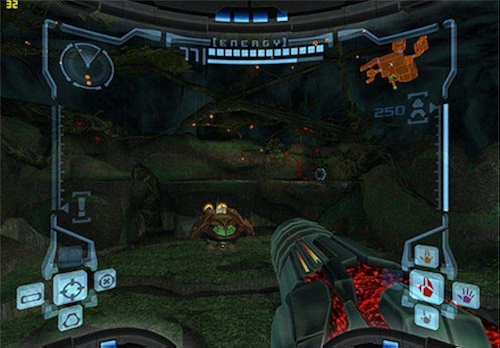
L'intera interfaccia è la visiera del casco attraverso cui il giocatore guarda il mondo, le informazioni pendono ai bordi della visuale, e se qualcosa di luminoso esplode lì vicino, il volto della protagonista si riflette sul lato interno della visiera. Se entri nel vapore o vai sott'acqua, il vetro si appanna e si ricopre di goccioline — qui la diegetic UI è stata resa una caratteristica del gioco.
Poi l'idea è maturata in diversi studi in modo indipendente, e in un solo anno diversi grandi progetti hanno lanciato l'approccio diegetico tutti insieme.
Dead Space (2008) ha messo la salute proprio sulla colonna vertebrale della tuta di Isaac, le munizioni e la carica di stasi sulle armi stesse, e ha reso l'inventario e la mappa un ologramma che il personaggio proietta davanti a sé in tempo reale. Il gioco non si mette in pausa quando apri un menu, e mentre stai frugando nell'inventario, un mostro può arrivarti alle spalle.
Far Cry 2 (2008) è andato ancora più radicale e ha eliminato del tutto la minimap. Vuoi orientarti — tira fuori una mappa di carta fisica e un dispositivo GPS, e il personaggio li tiene letteralmente in mano nel bel mezzo di uno scontro. Anche la guarigione lì è diegetica, con un'animazione di Jack che si estrae un proiettile o si rimette a posto un dito, e le pillole antimalaria che devi effettivamente tirare fuori.
Fallout 3 (2008) ha dato il Pip-Boy da polso, dove l'intero inventario, la mappa e le statistiche sono lo schermo di un dispositivo al polso, che il personaggio guarda insieme al giocatore.
La teoria accademica è arrivata dopo la pratica del suo utilizzo, e la "classificazione più famosa", quella che di solito si trova alle conferenze, ha preso forma nella tesi di Fagerholt e Lorentzon "Beyond the HUD" nel 2009, e un articolo di Gamasutra l'ha trascinata in ampia circolazione nel 2010. Cioè, prima gli studi, procedendo a tentoni nel 2008, hanno lanciato esempi pronti e funzionanti di tutte e quattro le categorie, e solo dopo sono apparse le belle parole diegetic / non-diegetic / spatial / meta, con cui tutto ciò è stato retroattivamente sistemato sugli scaffali. Un classico del genere — la teoria raggiunge la produzione e si appropria della terminologia.
Non appena il mondo è apparso ed è cresciuto, è cresciuta anche la questione di "dove mettere tutte le informazioni di servizio" che al giocatore vanno mostrate ma che non entrano più in quel mondo. Naturalmente la prima risposta è stata l'HUD (heads-up display, o Presentational UI), sprite sopra lo schermo, disegnati in un passaggio finale dopo l'intera scena. Vite, punteggio, munizioni, un timer. E questa abitudine di disegnare la UI "sopra e a parte" si è rivelata così comoda da diventare uno standard di settore da cui poi si è passati decenni a cercare di liberarsi.
La (HUD) Presentational UI è l'interfaccia classica che pende sopra l'immagine e non è in alcun modo spiegata dal mondo. Il personaggio non ne sa nulla, le leggi del mondo non agiscono su di essa. Nell'implementazione è economica, prevedibile e la più diffusa, checché ne dicano i fan dell'immersione totale.
La parola HUD stessa, i game designer, come al solito, non l'hanno inventata dal nulla ma l'hanno sgraffignata ai piloti militari, dove un heads-up display è il vetro trasparente davanti agli occhi del pilota, sul quale vengono proiettati altitudine, velocità e il mirino, per non abbassare la testa sugli strumenti durante il combattimento. I giochi hanno preso il termine e ne hanno conservato solo il significato "numeri importanti pendono davanti ai tuoi occhi sopra ogni altra cosa".
Il canone ha preso forma nella sala giochi, quando Space Invaders (1978) ha appeso il punteggio e l'high score in alto, e le vite rimaste e i crediti in basso. Questo layout "punteggio in alto, vite in basso" si è rivelato così naturale che viene ancora copiato senza pensarci. L'HUD qui non era uno strumento informativo ma di monetizzazione, perché il punteggio sullo schermo non è un numero di servizio ma un gancio psicologico, che ti costringe a infilare un'altra moneta per battere il tuo stesso risultato, mentre il contatore delle vite è un timer fino al momento in cui la macchina chiede di nuovo soldi.
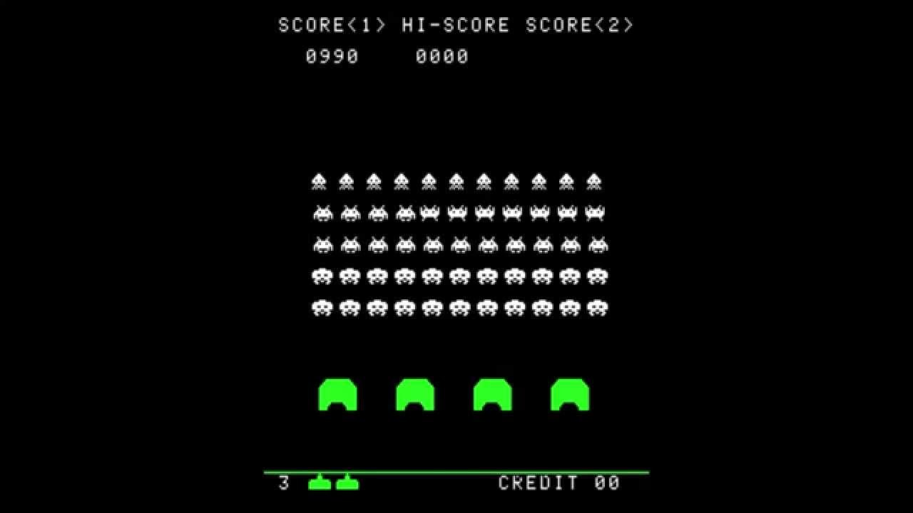
Pac-Man (1980) ha aggiunto un dettaglio importante — mostrava le vite non come un numero ma come piccole icone di Pac-Man, e il livello come frutta nell'angolo. Un'icona invece di una cifra si legge più in fretta, senza distrarre dal gameplay, e questo è il primo caso in cui l'HUD ha cominciato a essere progettato per la velocità di percezione, e non semplicemente "purché ci stia".
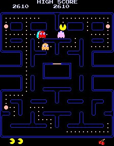
Defender (1981) ha dato all'industria la minimap, come soluzione forzata, perché il giocatore fisicamente non poteva vedere i nemici oltre il bordo dello schermo, e senza quella conoscenza il gioco si trasformava in una lotteria. Un radar in alto mostrava l'intero livello in forma compressa, e così è apparso un elemento dell'HUD che esiste unicamente perché il mondo è più grande della finestra attraverso cui lo guardi. Quarant'anni dopo la minimap si sarebbe ricoperta di icone di missioni, punti di interesse e marcatori fino allo stato di un albero di Natale, ma è nata proprio qui, dalla mancanza di visuale.
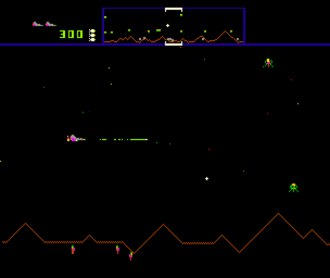
The Legend of Zelda (1986) ha assemblato da tutto questo una buona combinazione, che migliaia di giochi avrebbero poi usato: cuori come salute, un pannello permanente in alto con un contatore di rupie, chiavi, bombe e oggetti attivi. I cuori si sono rivelati una trovata geniale esattamente per la stessa ragione delle icone di Pac-Man — la quantità e lo stato della salute si possono semplicemente vedere, senza leggere un numero, con l'aggiunta della novità del "mezzo cuore".
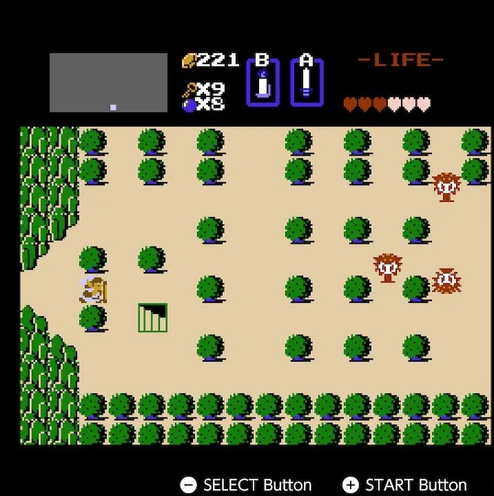
Doom (1993) ha mostrato che l'HUD può portare non solo informazioni o icone, ma animazioni a tutti gli effetti. Nel pannello in basso, accanto alle munizioni e all'armatura, viveva il volto di Doomguy, che si ricopriva di sangue man mano che si perdeva salute, sorrideva raccogliendo un'arma e guardava nella direzione da cui arrivava il danno. Tecnicamente era un indicatore di servizio, ma veniva percepito come un elemento di gioco che aggiungeva immersione anziché toglierla.
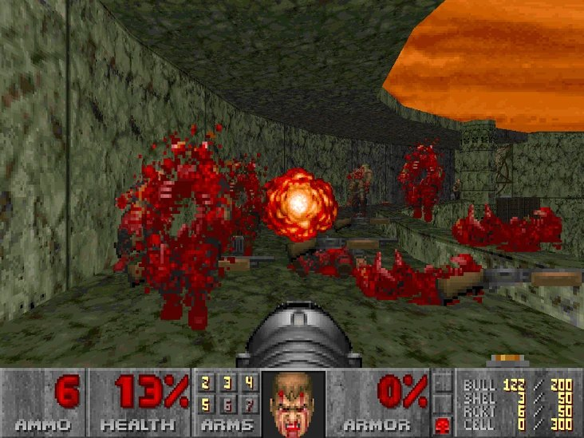
Poi Halo (2001) ha introdotto scudi rigeneranti con una barra che si ripristina da sola, e Call of Duty 2 (2005) è andato fino in fondo e ha eliminato del tutto la barra della salute, sostituendola con l'arrossamento dei bordi dello schermo e schizzi di sangue quando vieni colpito, con tutto che si guarisce da solo al riparo. Questa è ancora pura presentational UI, nessuna diegesi, il personaggio non sa nulla dei bordi rossi, ma l'informazione è trasmessa non da un numero ma da una sensazione, e lo schermo rimane vuoto.
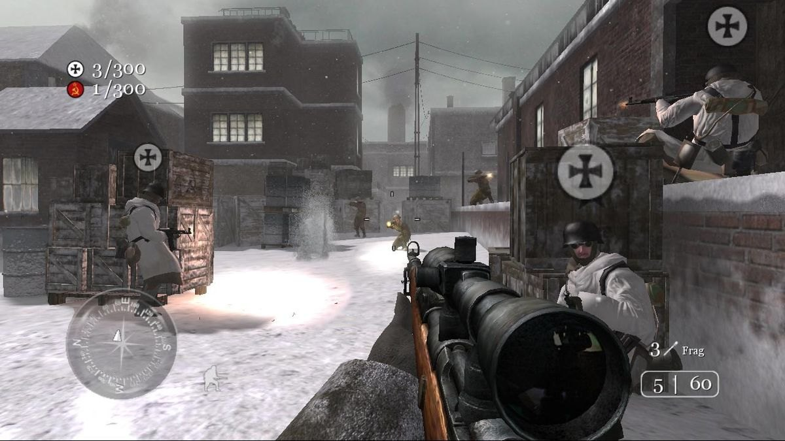
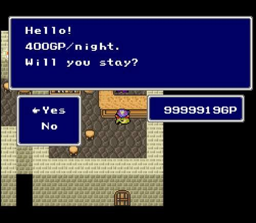
La Meta UI funziona come un elemento tecnicamente fuori dal mondo, ma allude allo stato del personaggio, per esempio gocce di sangue o rossore ai bordi dello schermo quando la salute è bassa, appannamento e respiro affannoso quando si è stanchi. Non c'è nessun mondo sullo schermo, ma il cervello del giocatore costruisce da solo la connessione, e questo è, forse, il modo più economico per creare una sensazione di stato vicina al comportamento Diegetic — semplicemente un effetto a schermo intero con dei parametri.
Al confine tra presentational e meta, tutta l'ordinata classificazione escogitata dagli accademici comincia a scricchiolare alle giunture, e proprio quei bordi rossi dello schermo con la salute bassa, che ho appena archiviato sotto presentational come "un HUD contestuale che ha imparato a nascondersi", nel canone di Fagerholt e Lorentzon sono in realtà elencati come esempio modello di meta. Questa è una zona grigia della classificazione stessa, perché la differenza tra "indicazione di servizio che finge soltanto di essere discreta" e "un effetto che allude allo stato del personaggio" dipende dall'interpretazione e dal tallone sinistro del tuo UI designer. Sotto il cofano entrambe saranno un passaggio a schermo intero con parametri, quindi tieni presente che meta non è una tecnologia separata, ma una visione separata — non "quante munizioni sono rimaste", ma "come si sente l'eroe in questo momento".
La forma più antica di meta è così vecchia da non essere nemmeno considerata un'interfaccia. Quando una macchina arcade degli anni settanta-ottanta inondava lo schermo di bianco o rosso per una frazione di secondo nel momento di un colpo, quello era proto-meta, perché non riguardava il mondo sullo schermo, il personaggio non sapeva nulla del lampo, ma il cervello del giocatore costruiva istantaneamente la logica dell'evento in "sono stato ferito". Economico fino all'indecenza, un solo fotogramma di palette invertita, e funzionava meglio delle invenzioni moderne.
Poi l'idea è maturata con calma, da "lo schermo reagisce a uno stato" a schizzi di sangue sulla telecamera quando si è feriti, sfocatura e visione doppia da una commozione cerebrale, oscillazione e immagine che si sfoca quando il personaggio è ubriaco o avvelenato. La serie GTA con la sua telecamera da ubriaco è un classico del genere — non leggi nulla e non guardi nulla, senti semplicemente in modo fisico che l'eroe è ubriaco, perché i comandi vanno alla deriva insieme all'immagine. E tutto questo, nell'implementazione, resta niente più di un paio di effetti a schermo intero, il modo più economico per simulare una sensazione di stato senza costruire un solo oggetto tridimensionale.
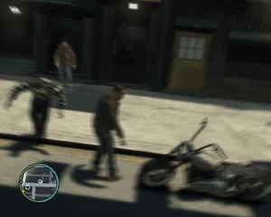
La vera pietra miliare, dopo la quale la meta UI ha cominciato a essere presa sul serio, è Eternal Darkness: Sanity's Requiem (2002). C'era un indicatore di sanità mentale, e quando calava, il gioco cominciava a cambiare attorno al personaggio. Lo schermo si inclinava, insetti strisciavano lungo le pareti, la testa dell'eroe cadeva senza preavviso (e poi si scopriva essere un'allucinazione). Gli sviluppatori non si sono fermati lì, e il gioco disattivava l'audio, lanciava una finta schermata blu, oppure mostrava un finto messaggio "il tuo salvataggio è corrotto e sarà ora eliminato" e un finto "To Be Continued" nel bel mezzo di una scena.
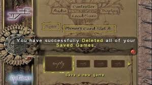
La meta ha smesso di alludere allo stato del personaggio e ha cominciato a entrare direttamente nella testa del giocatore, rompendo la quarta parete con lo stesso strumento economico, il fullscreen fakeout, solo puntato non verso l'interno del mondo ma verso l'esterno, nel salotto davanti allo schermo.
Dopo questo il genere horror ha di fatto adottato la meta UI come sua lingua principale, e per esempio Amnesia: The Dark Descent (2010) mostrava la ragione offuscata attraverso la distorsione dell'immagine, la visione tremolante e l'oscurità che avanza quando il personaggio restava al buio troppo a lungo.
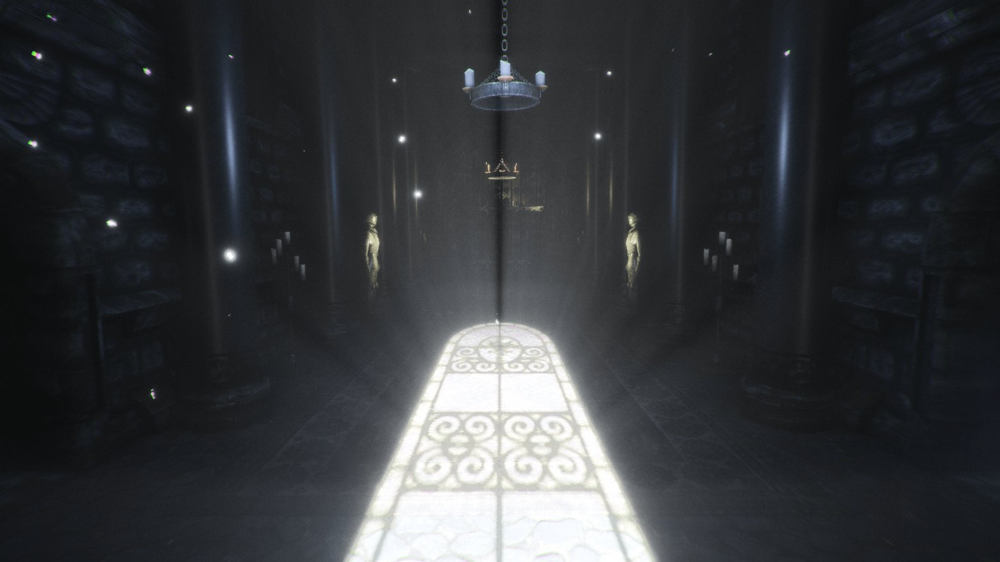
Spec Ops: The Line (2012) ha reso la meta UI una meccanica di gioco a sé, e man mano che la mente del protagonista deragliava, le schermate di caricamento si trasformavano da suggerimenti neutri in righe accusatorie rivolte personalmente al giocatore. Lo stato del personaggio trapelava negli elementi di servizio che dovrebbero essere del tutto fuori dal mondo.
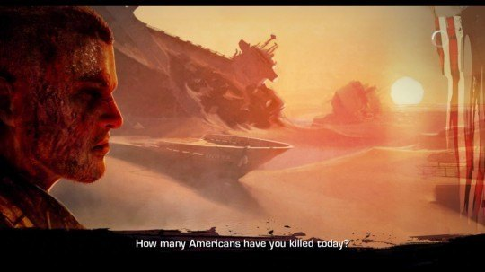
Il più lontano di tutti è andato Hellblade: Senua's Sacrifice (2017), dove la psicosi dell'eroina è trasmessa quasi interamente attraverso mezzi meta, come il suono con voci che sussurrano quasi proprio dietro di te nelle cuffie, la distorsione e lo sfocamento costanti dell'immagine, il confine sfumato tra il reale e l'immaginato. Lì non c'è nessuna barra del "livello di follia", perché lo stato del personaggio è l'interfaccia, e il giocatore lo vive con gli stessi mezzi dell'eroina, mentre formalmente tutto ciò rimane effetti screen-space sopra il render.
Nei giochi moderni la meta UI è diventata un trucco standard nel toolkit di post-processing e una specializzazione a sé per i game designer. Desaturazione e immagine che vira al grigio sull'orlo della morte, vignettatura e pulsazione ai bordi con la salute bassa, aberrazione cromatica da una commozione cerebrale, uno spostamento di colore e onde da un avvelenamento — tutto questo è meta, realizzato da una o poche persone, e nessun grande progetto esce più senza questo set. È ancora il modo più conveniente in termini di costi, per "effetto per unità di sforzo", di parlare al giocatore al di là del gioco, distribuendo una porzione molto piccola di dati mentre il cervello del giocatore riempie gratis tutto il resto.
La Spatial UI è legata allo spazio del mondo, ma non a schermi specifici presenti nel mondo di gioco. Sono i tag sopra la testa degli NPC, i marcatori delle missioni, i contorni evidenziati degli oggetti interattivi e, sebbene questi elementi esistano formalmente nelle coordinate tridimensionali della scena, il personaggio non li vede, li vediamo solo noi, perché di solito sono tutti costruiti sopra il presentational layer.
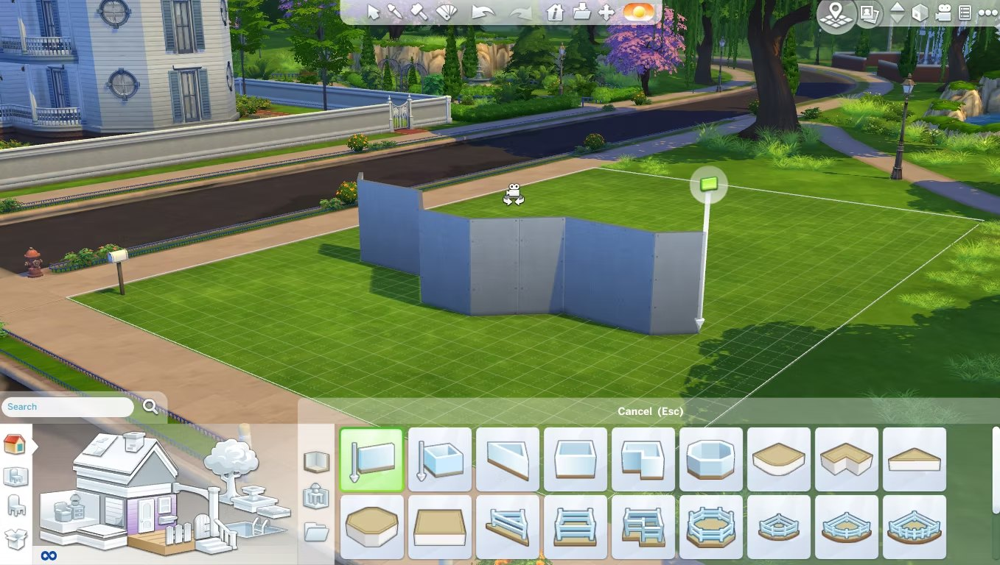
Le radici della spatial UI affondano nei giochi di strategia, come l'anello verde sotto un'unità selezionata e la barra della salute sospesa proprio sopra la sua testa. Questo è l'elemento spatial UI più puro, che vive in un punto del mondo, si muove insieme all'oggetto, ma l'unità stessa non sa nulla del suo anello, solo il giocatore lo vede dall'alto.
La soluzione era utilitaristica: devi in qualche modo mostrare cosa esattamente hai selezionato e quanta salute ha. Quando il genere è passato al 3D e ai mondi aperti, lo spatial è fiorito, e il suo simbolo è diventato il punto esclamativo giallo sopra la testa di chi assegna le missioni, che World of Warcraft (2004) ha canonizzato in massa, e da allora il "!" sopra un NPC e il "?" sopra colui a cui consegni un incarico si leggono intuitivamente in qualsiasi gioco al mondo senza una sola riga di spiegazione.
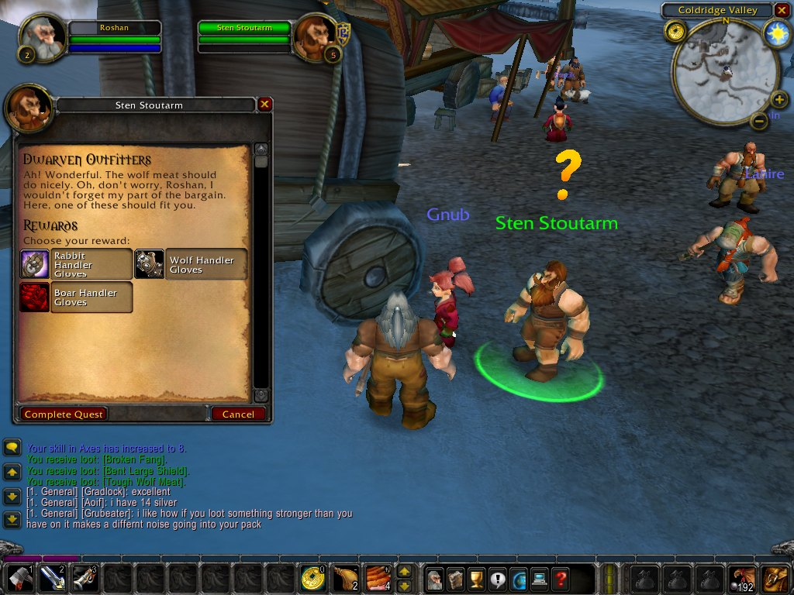
È una mossa geniale nella sua semplicità, in cui non devi creare dialoghi, non servono suggerimenti, il giocatore vede da lontano un punto nello spazio e ne capisce immediatamente la funzione.
In parallelo si è risolto un compito più sottile, la navigazione. Fable (2004) ha aggiunto una scia dorata luminosa proprio lungo il terreno, che conduce all'obiettivo successivo, disegnando letteralmente un percorso nel mondo invece di una freccia nell'angolo. Il giocatore camminava lungo una scia che non esisteva, senza staccare gli occhi da ciò che stava accadendo.
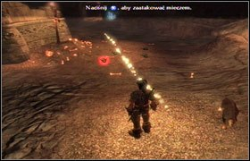
Un ramo ampio e a sé stante delle meccaniche spatial è l'evidenziazione degli oggetti interessanti direttamente nella scena. Un contorno su un oggetto con cui puoi interagire, un popup "premi per raccogliere" accanto a una cosa specifica, un riflesso su una loot box. E quando serviva molta evidenziazione, sono nate intere modalità di visione: la Detective Vision in Batman: Arkham Asylum (2009), i sensi da witcher in The Witcher 3, il Focus in Horizon, la modalità d'ascolto in The Last of Us.
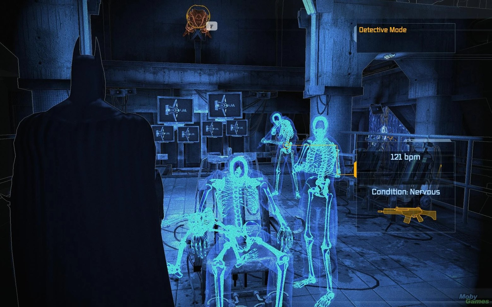
Tecnicamente si tratta di un overlay spatial che traccia i contorni di nemici, tracce e oggetti attraverso la geometria e, formalmente, il personaggio "scruta" in questi momenti, ma noi vediamo comunque l'evidenziazione, e funziona in coordinate del mondo.
Mirror's Edge (2008) con la sua Runner Vision è lo stesso trucco rivolto alla navigazione: gli oggetti necessari sul percorso si illuminano di rosso, dirigendo lo sguardo lungo il livello, mentre Faith non vede affatto alcun rosso.
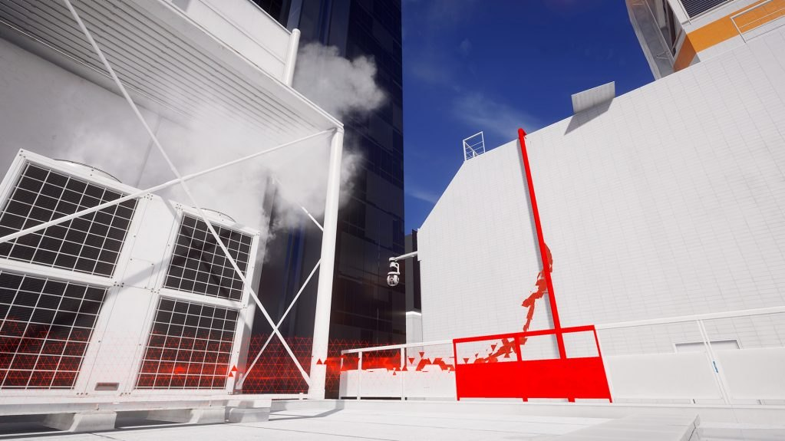
Poi i mondi aperti, specialmente quelli della scuola Ubisoft, hanno tappezzato la mappa e il mondo stesso con una nuvola di icone sospese nei punti del mondo, e il giocatore ha iniziato a guardare non il paesaggio ma la ghirlanda di marcatori sopra di esso.
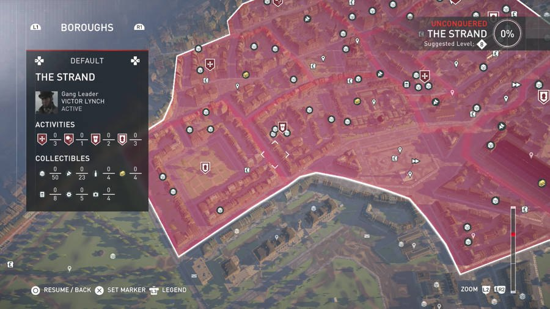
Contigua a questo è la recente disputa sulla vernice gialla sulle sporgenze a cui puoi aggrapparti. È un caso limite, perché la vernice è integrata direttamente nella texture del mondo ed è formalmente quasi diegetic, ma per funzione è un puro puntatore spatial "arrampicati qui", e alcuni giocatori la considerano una stampella che gli studi hanno amorevolmente attaccato con il nastro adesivo alla tua mano.
Come al solito, il pendolo è tornato indietro e i giochi hanno iniziato a proporre di disattivare i marcatori e navigare tramite descrizioni (la modalità esplorazione in Assassin's Creed Odyssey), e la soluzione più elegante è stata mostrata da Ghost of Tsushima (2020), quando invece di una freccia waypoint hanno realizzato un vento guida che soffia verso l'obiettivo, spingendo foglie ed erba.
Funzionalmente è sempre lo stesso puntatore spatial di direzione, ma visivamente è tornato nella diegesi, perché il vento fa parte del mondo, e l'eroe, per così dire, lo sente. Il cerchio si è chiuso: la navigazione spatial è stata vestita con abiti diegetic per togliere ancora un'altra icona dallo schermo.
C'è anche la Narrative UI — è il modo in cui il gioco parla al giocatore attraverso i sottotitoli, gli alberi di dialogo, i diari delle missioni, i codex e le note. Formalmente è quasi sempre Presentational UI, perché il personaggio non vede i sottotitoli in fondo allo schermo e la legge del mondo non agisce su di essi, ma la narrative UI più di ogni altra viola la purezza della classificazione e tende a spingersi nel mondo. La ruota dei dialoghi in Mass Effect è sospesa sopra l'immagine e non è spiegata dal mondo, ma i terminali e i diari audio in System Shock e BioShock sono già schermi semi-diegetic che il personaggio tiene effettivamente tra le mani e ascolta. Il diario delle missioni in The Witcher 3 è scritto dal punto di vista di Dandelion come testo interno al mondo, sebbene si apra con un ordinario menu in pausa, e questa dualità ci permette di isolare questo tipo come separato, invece di dissolverlo nell'HUD o nei menu. La narrative UI è quel raro caso in cui l'elemento di interfaccia più "testuale" e apparentemente più semplice si trascina dietro un intero sottosistema di dati. Sconfina anche un po' sul secondo asse, motivo per cui viene spesso messa completamente a parte.
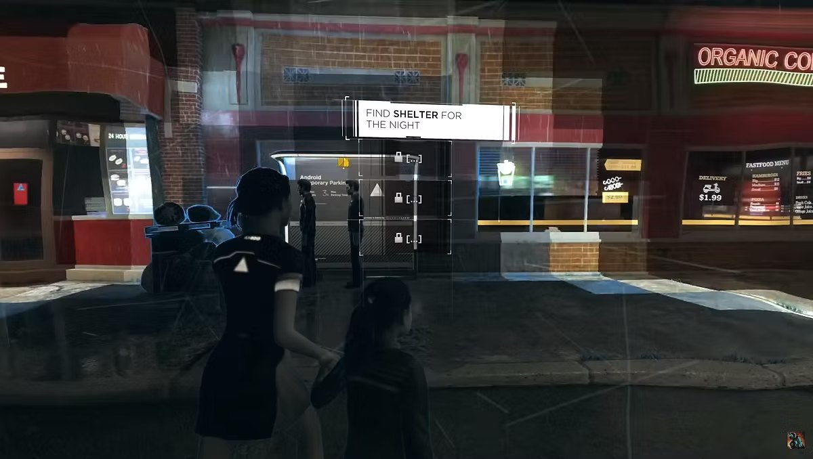
La narrative UI sta a sé e si classifica non in base a dove viene disegnata, ma in base a ciò che porta con sé, e porta storia e dati. E a seconda dell'implementazione si spinge tranquillamente in uno qualsiasi dei quattro tipi precedenti, per esempio come diario audio tra le mani è semi-diegetic, e una nota che compare sopra un oggetto è più vicina allo spatial. Questa, tra l'altro, è l'unica categoria definita attraverso il contenuto piuttosto che attraverso il metodo di rendering, ed è proprio per questo che tende eternamente a spingersi nel mondo.
La narrative UI è il nonno di tutte le interfacce, e i primi giochi consistevano interamente solo in essa. Colossal Cave Adventure (1976) e Zork (1977) erano puro testo, e dovevi leggere la descrizione di una stanza e digitare comandi a parole, e l'intera interfaccia era solo testo in entrata e in uscita. Nessun HUD, nessun mondo sullo schermo, perché in realtà non c'è nemmeno uno schermo, c'è un dialogo tra il gioco e il giocatore in linguaggio naturale. Quindi "l'elemento più testuale e apparentemente più semplice" è in realtà l'antenato di tutto il resto della UI, e la grafica è cresciuta attorno ad esso più tardi.
Poi la narrative UI si è sviluppata nella direzione della complicazione di ciò che si nasconde dietro il testo. Prima è apparsa una casella di dialogo in fondo allo schermo, il canone dei JRPG e delle avventure, da Dragon Quest (1986) alle avventure point-and-click.
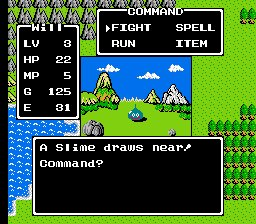
Poi il testo ha iniziato a ramificarsi, e i CRPG classici come Fallout (1997) offrivano un elenco numerato di battute, alcune delle quali si aprivano solo con l'abilità giusta, e qui per la prima volta la narrative UI si è trascinata dietro un intero sottosistema, quando dietro l'innocuo elenco di risposte stavano controlli di statistiche, flag di stato e biforcazioni che devono essere memorizzati da qualche parte e salvati da qualche parte.
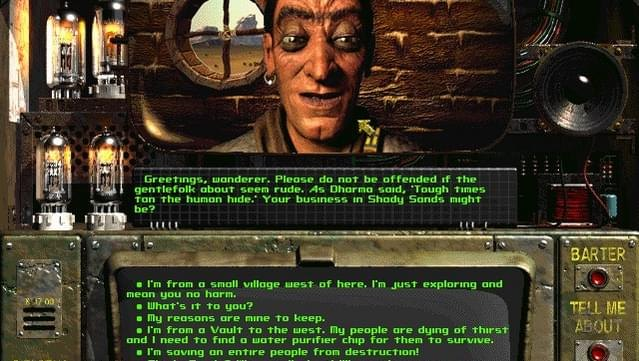
Mass Effect (2007) ha inventato la ruota, in cui le opzioni sono disposte in cerchio per tono, quelle amichevoli in alto, quelle aggressive in basso, e il giocatore sceglie non una frase esatta ma un'intenzione, dopodiché lo Shepard completamente doppiato pronuncia una battuta ampliata.
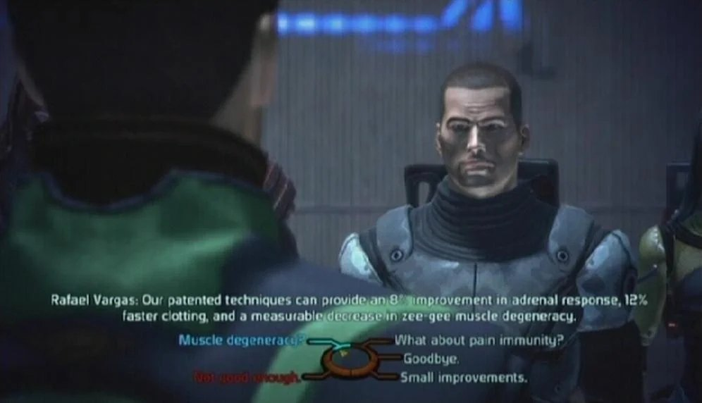
Questo è un tentativo di tirare la narrative UI fuori dal "lettore" verso il cinema, e ha anche messo in luce la necessità del doppiaggio completo di ogni ramo in diverse lingue. In parallelo scorreva una linea che trascinava la narrative UI nel diegetic, e System Shock (1994), e dopo di esso BioShock (2007), hanno reso i diari audio una parte della narrative UI, quando il personaggio raccoglie fisicamente un dittafono o un registro, la registrazione viene riprodotta mentre continui a camminare, e la storia del mondo viene raccontata non dalle cutscene ma dagli oggetti trovati.
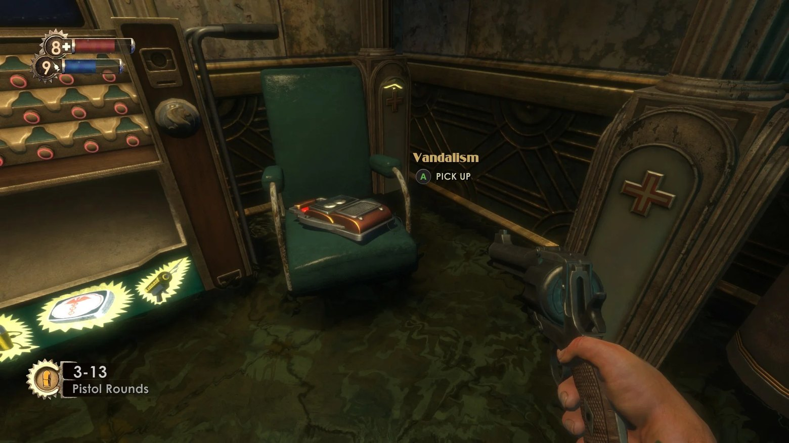
Questa è già un'interfaccia semi-diegetic, proprio quel caso in cui "come il gioco parla al giocatore" coincide con "cosa il personaggio tiene tra le mani". Red Dead Redemption 2 (2018) ha dato all'industria un diario che Arthur disegna e firma a mano, sebbene si apra con lo stesso menu in pausa, rendendo la pausa stessa un gioco, quando le descrizioni delle missioni fingono di essere l'opera d'arte del personaggio.
E dietro questa "semplicità" si nasconde la parte più pesante di tutta l'interfaccia in senso ingegneristico. I sottotitoli in fondo allo schermo sono la punta dell'iceberg, sotto la quale giacciono la localizzazione in un paio di dozzine di lingue con lunghezze di riga diverse, la sincronizzazione del testo con il doppiaggio, un sistema di flag e una macchina a stati delle missioni, un codex come database completo del lore, e il salvataggio e il caricamento dell'intero stato dei dialoghi. Cioè, l'elemento UI più "testuale" in realtà si trascina dietro un sottosistema di dati, un reparto di narrative design, un reparto di localizzazione e un mucchio di bug nello spirito di "una battuta fa riferimento a un evento che non è accaduto in questa partita".
Ecco perché la narrative UI viene messa a parte meritatamente: è l'unica definita dal contenuto, l'unica a permeare tutti e quattro i tipi contemporaneamente, e l'unica ad affondare le radici nei primissimi giochi, rimanendo la parte più costosa e fragile dell'interfaccia dietro una facciata di innocue righe di testo.
È utile tenere presente che questo asse riguarda puramente la percezione del giocatore e non dice quasi nulla al programmatore su come implementarlo. Un orologio diegetic sotto il cofano è lo stesso insieme di dati sulla salute di una barra ordinaria, solo renderizzato nello spazio del mondo invece che nello spazio dello schermo. La classificazione del designer e l'architettura ingegneristica vivono qui su piani diversi, e non vanno confuse.
Asse due: la funzione dell'interfaccia

Qui di solito si distingue l'HUD come informazione costantemente sospesa (salute, munizioni, bussola), gli schermi diegetic come terminali e schermi interni al gioco, i menu come inventario, mappa e impostazioni, oppure i prompt contestuali come suggerimenti popup "premi E per aprire".
Ogni tipo su questo asse ha un profilo di carico diverso, e lo stesso HUD si aggiorna a ogni frame ma contiene pochi elementi, e va reso il più economico possibile da renderizzare, mentre un menu contiene centinaia di elementi ma si aggiorna raramente ed è comunque spesso in pausa, quindi può permettersi un layout pesante e strutture complesse. I prompt contestuali compaiono e scompaiono a grappoli, e per loro conta più la creazione-distruzione economica che la velocità di aggiornamento.
Cioè, quando ti dicono "scegli un'unica architettura UI per tutto il gioco", è più o meno come "scegli un unico tipo di memoria per tutta la console", cioè funzionerà male per tutti. In un progetto reale l'HUD, i menu e i prompt vivono quasi sempre su sottosistemi diversi, semplicemente perché hanno requisiti diversi.
Asse tre: l'archiviazione in memoria

Qui comincia l'ingegneria, e qui cominciano anche le prime guerre di religione, le scuole, le confessioni e gli evangelisti del lato luminoso e dei biscotti.
Lo Scene Graph è il classico albero di oggetti, in cui ogni nodo conosce i propri figli, i figli conoscono il genitore e l'intera interfaccia è una gerarchia, di cui ho parlato nella prima parte. È così che sono costruiti la maggior parte dei moderni sistemi di UI, ed è il modo più intuitivo, perché l'albero dei widget riflette uno a uno il modo in cui ci raffiguriamo mentalmente l'interfaccia. Una finestra contiene un pannello, il pannello contiene un pulsante, il pulsante contiene del testo. Il costo di tutta questa bellezza è incorporato nell'attraversamento dell'albero, nel pointer chasing, nei cache miss, e su una UI grande l'attraversamento dell'albero diventa d'improvviso percepibile nel profiler.
Poiché tutti volevano che fosse bello e veloce, l'industria a lungo si è trascinata dietro pesanti stack già pronti per amore della velocità di sviluppo. Il più rumoroso era Scaleform, che permetteva agli artisti di comporre i menu in Flash con ActionScript, e mezza industria AAA negli anni 2000 e nei primi anni 2010 ci si era seduta sopra, da Mass Effect a Skyrim. Il costo era davvero salato, e dentro il gioco girava effettivamente un'intera macchina Flash, a volte più di una, ciascuna con il proprio renderer e il proprio garbage collector. E un semplice menu si ritrovava non solo con un sottosistema a parte, ma con una macchina virtuale a parte, perché il profilo di "tanti contenuti, aggiornamenti rari, si può stare in pausa" lo perdona.
Scaleform alla fine è stato dismesso, ma l'idea non è andata da nessuna parte, Flash è semplicemente diventato HTML/CSS/JS: Coherent GT, Gameface e altri "browser dentro il gioco" fanno la stessa cosa, mettendo in mano agli artisti del layout il familiare stack web al prezzo di un runtime.
Lo scene graph è arrivato alla UI dalla grafica tridimensionale, ed è arrivato a braccetto con l'ondata orientata agli oggetti degli anni novanta. Quella stessa Silicon Graphics, che ha dato all'N64 la sua capricciosa RDRAM, promuoveva Open Inventor e Performer, dove una scena è un albero di nodi: trasformazioni, geometria, materiali, tutti annidati l'uno nell'altro.
Poi l'idea si è diffusa in tutte le direzioni, e quando le si è sovrapposta la moda "tutto è un oggetto, un oggetto ha dei figli", l'albero dei widget è arrivato a sembrare l'unico modo naturale di descrivere un'interfaccia. Una finestra contiene un pannello, il pannello contiene un pulsante, il pulsante contiene del testo, e una persona legge questa gerarchia esattamente come la tiene in testa.
Lo scene graph è pesante, e il modo più antico per renderlo più economico è non andare dove non è cambiato nulla. Dirty flags e invalidation, quando un nodo viene marcato come "dirty" al cambiamento, e il layout con il ridisegno passano solo sui sottoalberi "dirty", mentre quelli puliti vengono saltati. Questa ottimizzazione di base fa risparmiare davvero su un menu che sta fermo, ma non dà nulla se ogni frame è per definizione "dirty", perché salute e munizioni cambiano di continuo.
La Flat List risolve questo problema, e ora tutti gli elementi giacciono in un unico array denso, e la gerarchia è determinata non da puntatori ma da un campo parent_id. Un passaggio lineare su un array del genere è economico, il che ne fa un'eccellente scelta per una UI statica con un gran numero di elementi. Il prezzo è che qualsiasi modifica alla gerarchia richiede di mantenere l'ordine corretto degli elementi (il genitore deve essere elaborato prima dei figli), e questo è un topological sort, che va ricalcolato con attenzione a ogni ricostruzione dinamica della gerarchia.
La Flat List è nata dal movimento generale del data-oriented design, che ha guadagnato particolare popolarità tra la metà e la fine degli anni 2000, proprio nell'era delle console. È l'era di cui ho parlato nell'articolo sulla memoria delle console: la PS3 e la Xbox 360, cache piccole, accesso casuale costoso, SPU che potevano lavorare solo con dati densi nel loro Local Store.
Su hardware del genere un albero di oggetti sparsi per l'heap colpiva molto duramente le prestazioni, e i programmatori hanno cominciato a spostare sistematicamente tutto da "array of structures" a "structure of arrays", e la UI prima o poi è finita sotto lo stesso pettine. L'idea principale dell'approccio data-oriented sono proprio gli array paralleli (structure of arrays) in contrapposizione all'array of structures tipico del design a oggetti, e la flat list è proprio la stessa idea applicata alla gerarchia dei widget.
Un approccio puramente basato su indici funziona a meraviglia per grafi statici come lo scheletro di una mesh, ma si trasforma in un mal di testa su quelli dinamici. Finché la gerarchia non cambia, un array piatto è ideale, ma non appena la gerarchia comincia a essere ricostruita dinamicamente, bisogna mantenere l'ordine corretto, e questo è lo stesso topological sort che non è economico da ricalcolare. Perciò in pratica la flat list vive quasi sempre in coppia con un qualche livello di indirezione, handles al posto di nudi indici, così da poter cancellare e riordinare gli elementi senza ricostruire l'intero array, ed è proprio contro questo compromesso che si è imbattuto chiunque abbia percorso questa strada.
Un esempio pubblico è la riscrittura di OGRE alla versione 2.0, dove Matías Goldberg ha spostato i dati in grandi array omogenei e ha fatto sì che le funzioni iterassero sugli array invece di lavorare con un singolo elemento, il che secondo il benchmark ha dato all'incirca una triplicazione della velocità, e ha mantenuto le familiari astrazioni di classe, così l'API non ha quasi dovuto essere riscritta.
Il secondo portatore di massa dell'idea sono le librerie immediate-mode. L'approccio in sé è stato inventato da Casey Muratori nel 2002, e i suoi discendenti Dear ImGui ed egui oggi siedono dentro un enorme numero di giochi, ma sono popolari specificamente come veloci interfacce di debug sopra i giochi, dove la UI è piccola, poco stilizzata e le prestazioni non sono critiche. Al loro interno, ammucchiano l'intera interfaccia in un flat command buffer a ogni frame, cioè è la flat list portata al limite, tra un frame e l'altro non c'è alcun albero.
// Scene Graph: bello
struct Widget {
Transform transform;
Widget* parent;
Widget* children[N]; // ogni figlio è un oggetto separato da qualche parte nell'heap
};
// Flat List: brutto
struct Widgets {
Transform transform[MAX]; // array denso
int parent_id[MAX]; // -1 per la radice
// elaborato in un singolo passaggio lineare
};Il Retained Mode significa che i widget esistono in modo permanente, il sistema conserva il loro stato tra i frame e ridisegna solo ciò che è cambiato. È così che funzionano la maggior parte dei framework di UI tradizionali, dal DOM del browser alla stessa UGUI, ed è efficiente in termini di calcolo, perché se non è cambiato nulla, non c'è nulla da fare, ma costoso in memoria (relativamente), perché lo stato va conservato, sincronizzato e aggiornato da qualche parte.
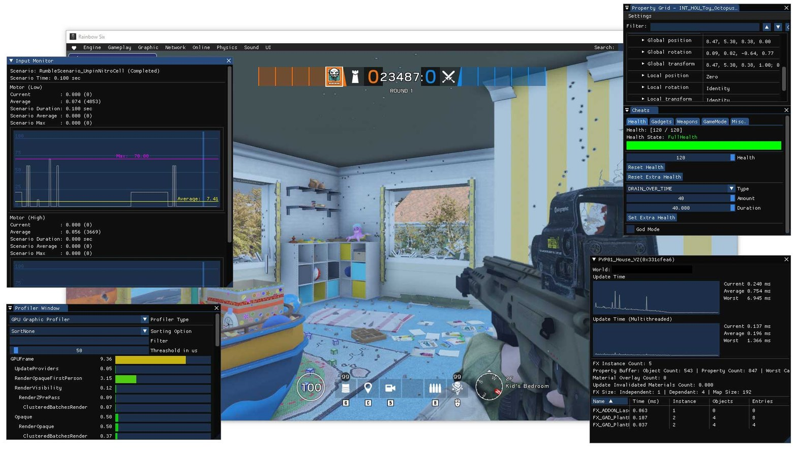
L'Immediate Mode è la filosofia opposta, quando i widget non vengono affatto conservati come struttura, e a ogni frame il codice descrive daccapo l'intera interfaccia da zero. Dear ImGui e Nuklear sono costruiti su questo, e c'è in esso una semplicità ingannevole.
// Immediate mode: l'interfaccia è codice
if (gui.Button("Save")) {
save_game(); // la pressione viene gestita proprio qui, sul posto
}
gui.SliderFloat("Volume", &volume, 0.0f, 1.0f);
gui.Text("FPS: %d", current_fps);
// nessun albero, nessuna subscription, nessuno stato tra i frameLa semplicità vince grazie al debugging economico, dato che si fa il debug del codice, e l'intera interfaccia si può leggere dall'alto verso il basso, e non c'è alcuno stato nascosto che possa diventare obsoleto. Ma lo si paga dovendo descrivere e ricalcolare l'intera UI a ogni frame, anche se sullo schermo non è cambiato assolutamente nulla. Perciò l'immediate mode regna negli strumenti di debug e negli editor, dove non importa, e molto più raramente arriva all'HUD finale del gioco.
La modalità ECS è un tentativo di tirare una nuova civetta sul vecchio mappamondo, cioè l'interfaccia sullo stesso modello del resto del mondo di gioco. L'idea in sostanza è anch'essa semplice, perché ogni widget è un'entità che ha i componenti Position, Size, Color, Text, Visible, e la gerarchia è espressa da un componente Parent { entity_id }. Bevy UI è probabilmente il tentativo più coerente di portare l'idea fino in fondo, e suona meraviglioso, perché in quel caso uno stesso motore ECS fa girare sia il gameplay sia l'interfaccia.
Per capire perché l'ECS sulla UI suona meraviglioso ma si comporta in modo pessimo, bisogna ricordare per cosa è apparso in primo luogo, ed è apparso per un mondo di gioco con migliaia di oggetti, non per una dozzina di pulsanti. Il pioniere dell'approccio è considerato il motore di Thief: The Dark Project, che è stato il primo ad applicare l'ECS, e quello stesso motore è stato poi riutilizzato nel seguito e in System Shock 2.
L'inizio canonico dell'intera idea è stato il talk di Scott Bilas al GDC 2002 sul sistema di oggetti di gioco in Dungeon Siege, che ha ispirato molte implementazioni successive ben note. E la scala lì era di più di 73 mila tipi unici di oggetti e circa 100 mila oggetti piazzati sulle mappe, con alcuni livelli che contenevano fino a 60 mila entità. L'ECS è stato inventato esattamente per questo, per una folla di oggetti identici su cui i sistemi devono essere eseguiti in modo lineare e veloce.
La tentazione, quando hai già un ECS veloce che fa girare l'intero mondo di gioco, è di tirarlo sopra un motore di UI separato ed esprimere l'interfaccia con le stesse entità e componenti. Uno scheduler di sistemi, un allocatore, un modello di dati per tutto, e un widget non è in linea di principio diverso da un cespuglio o da un proiettile.
E qui salta fuori lo stesso problema della flat list. La UI è gerarchica per sua natura: il layout è annidato, lo z-order è ereditato, gli eventi risalgono dal figlio al genitore. E l'ECS per sua natura ama folle piatte e omogenee di entità indipendenti. Quando esprimi un albero attraverso un componente Parent { entity_id }, con lo stesso identico movimento ti riporti dietro sia il pointer chasing sia la necessità di rispettare l'ordine di elaborazione genitore-prima-dei-figli, cioè tutto quel trambusto topologico della sezione precedente, solo che ora sopra la macchineria dell'ECS. In più l'ECS stesso non è gratuito su un profilo del genere, e ogni widget leggermente diverso è un insieme leggermente diverso di componenti, e lo storage comincia a frammentarsi in una moltitudine di piccoli gruppi, il che divora la promessa linearità.
È proprio per questo che la community della stessa Bevy si lamenta che creare gerarchie profonde di nodi UI interattivi è difficile, e compiti familiari richiedono un mucchio di boilerplate sotto forma di marker components, sistemi e bundle, il che rende il codice più difficile da tenere in testa. Ora si sono cominciati a bullonare wrapper immediate-mode sopra l'ECS-UI, perché in immediate mode un ECS-UI può essere fatto girare, aggiornando i widget a ogni frame, ma non sarà più né idiomatico né performante. Cioè l'ECS puro si è rivelato scomodo proprio per quella parte della UI in cui l'immediate mode è bravo, e i due approcci hanno dovuto essere conciliati.
In pratica, l'ECS-UI puro non esiste in produzione, e probabilmente non esisterà, perché la UI è profondamente gerarchica per natura e legata all'ordine (cosa è disegnato sopra cosa, chi ritaglia chi per i bounds, la cui pressione intercetta l'evento dal livello inferiore), mentre l'ECS nella sua forma pura è ideologicamente incentrato su insiemi piatti di componenti senza una gerarchia e un ordine pronunciati. Perciò nei motori reali la UI vive di solito come un sottosistema separato con un flusso di dati unidirezionale, che può stare accanto all'ECS e leggerne i dati, ma non cerca di essere ECS puro, perché altrimenti si finisce presto per combattere il framework invece di portare a termine il lavoro.
Asse quattro: flusso dei dati

Lo storage riguarda dove si trovano i widget, il flusso dei dati riguarda come i cambiamenti li raggiungono.
MVC / MVP è quel classico dei manuali, in cui il model contiene i dati, il view li mostra e il controller o il presenter sta nel mezzo e mette ordine. Sul web e nelle applicazioni gestionali è ancora una struttura portante, ma nei giochi in forma pura è raro, perché lo stato di gioco cambia spesso, i dati arrivano da molte fonti, e l'ordinata cerimonia a tre livelli con cui MVC mette le mani sui controlli, sotto una simile pressione, si trasforma rapidamente in una poltiglia di controller.
MVC in forma pura è un ospite raro nei giochi. È nato dal mondo delle applicazioni desktop di fine anni settanta ed è stato inventato da Trygve Reenskaug allo Xerox PARC attorno al 1979 sotto Smalltalk-80. Il compito era separare i dati, la forma che li mostra e l'input dell'utente. Da qui sono nate delle varianti, e MVP ha preso forma definitiva negli anni novanta nelle profondità di Taligent e IBM come un "controller dai poteri ampi", mentre MVVM è stato inventato da John Gossman di Microsoft nel 2005 proprio per il data binding in WPF.
Questo pattern fa risalire la propria discendenza dal software gestionale, dove da tempo è diventato una struttura portante specificamente nello sviluppo web e di applicazioni per sistemi UI manutenibili, e nessuno lo ha progettato per un carico di lavoro da gioco.
MVC e i suoi parenti si fondano sull'assunto che lo stato cambi per eventi e di rado, per esempio l'utente ha inserito qualcosa in un campo, il controller lo ha intercettato, il model si è aggiornato, il view si è ridisegnato. Ma lo stato di gioco non cambia per un evento bensì di continuo, a ogni frame, e proviene da un mucchio di fonti contemporaneamente: fisica, rete, AI, input, animazione.
In un ambiente simile questo modello o comincia a strattonare il sistema di notifiche cento volte a frame, oppure lo sviluppatore rinuncia alla purezza e trascina i dati attraverso i livelli, ed è esattamente qui che fiorisce quella poltiglia di controller, perché il livello che avrebbe dovuto mettere ordine si trasforma in una discarica di callback diretti "prendi subito quella salute da quel manager".
Il dettaglio chiave, senza il quale MVVM in un gioco non ha alcun senso, è il livello di binding. Ma tutti coloro che parlano di MVVM nei giochi saltano deliberatamente la quarta parte, quella che fa tutta la magia. Perché altrimenti non potrebbero venderti il loro super-mega-nuovissimo framework.
Il Binder deve essere già stato scritto da qualcuno come parte dell'engine o del framework UI. Verrà a sapere di un cambiamento nel ViewModel tramite un evento e aggiornerà l'elemento necessario del View, e senza questo binder MVVM è molto difficile da giustificare. Un tale Binder dovrebbe essere scritto in ogni singolo engine, ma il framework ti è già stato venduto, ovvero il pattern è praticabile nei giochi esattamente nella misura in cui l'engine fornisce meccanismi di binding pronti, e non devi scriverli tu.
MVVM nel gamedev ha portatori piuttosto concreti, si tratta di nuovo semplicemente di middleware ed engine. Il principale è NoesisGUI, di fatto un porting del mondo WPF nei giochi. Lì il View è XAML, che i designer disegnano in strumenti come Blend, il View ottiene i dati dal DataContext tramite data binding, e gli autori raccomandano direttamente un approccio MVVM puro, in cui i programmatori espongono le informazioni attraverso il DataContext, e quello è il Model in termini MVVM.
Funziona sopra Unity, Unreal, MonoGame ed engine custom, e i clienti stessi lo elogiano proprio perché il pattern MVVM che Noesis usa è estremamente flessibile e permette di costruire grandi interfacce complesse facili da mantenere, per titoli multipiattaforma complessi, dalle interfacce VR immersive fino ai profondi strumenti di creazione di contenuti. Quei "titoli e strumenti multipiattaforma complessi" sono l'habitat naturale di MVVM nei giochi.
Il secondo portatore è Unreal stesso, che è maturato in un MVVM integrato e nel meccanismo del plugin UMG ViewModel comparso in Unreal Engine 5.1, con un sistema field-notify, in cui cambiare una variabile tramite un normale Set invia una notifica, e i binding si aggiornano automaticamente.
Curiosamente, è diventato integrato piuttosto tardi, e Unreal stesso a lungo non ha avuto un supporto MVVM pronto all'uso, e prima di allora il pattern era portato in UE da diversi plugin della community.
Risulta che MVC/MVP/MVVM è un livello "da app gestionale" importato nei giochi, e si comporta esattamente come un pezzo importato, cioè si incastra magnificamente nella parte del progetto che assomiglia a un'applicazione, e resiste dove comincia tutto il resto. Non esiste un unico modello UI corretto, così come non esiste un unico tipo di memoria corretto, ci sono solo carichi di lavoro diversi, per ciascuno dei quali scegli il tuo, e un progetto vivo tiene insieme più approcci contemporaneamente, MVVM nelle impostazioni e immediate-mode sull'HUD, esattamente come una console tiene una DRAM grande e lenta accanto a una SRAM veloce e piccola.
Così gli sviluppatori di giochi furbi hanno trascinato dentro il modello Reactive / Observable, che inverte la responsabilità, e adesso la UI si sottoscrive ai cambiamenti dei dati e si aggiorna da sola. Lo HealthComponent è cambiato e ha lanciato un evento, e tutti i sottoscrittori (la barra della salute, il rossore dello schermo, il suono del battito cardiaco) lo hanno saputo e si sono aggiornati, senza chiedere a ogni frame "beh, è già cambiato?". Questo è molto popolare nei giochi mobile, perché risparmia bene la CPU su ricalcoli inutili, ma la reattività ha un lato oscuro. Adora ricoprirsi di sottoscrizioni e diventa dolorosamente difficile capire perché proprio quel widget si è improvvisamente ridisegnato e quest'altro no, trasformando il debug nel districare una matassa di "chi è sottoscritto a chi".
L'idea di tutto ciò risiede nel pattern Observer di quel famoso libro della Gang of Four, in cui il soggetto-oggetto tiene una lista di sottoscrittori e li punzecchia al cambiamento. Poi l'idea è maturata ed è nata attorno all'animazione, cioè attorno a valori che cambiano nel tempo, il che per il nostro tema è simbolico.
La reattività è entrata nello sviluppo di massa quando Microsoft ha generalizzato Observer agli stream di dati sotto forma di Reactive Extensions per .NET, e oggi ReactiveX sono librerie disponibili in molti linguaggi, mentre l'approccio stesso è incentrato sugli stream di dati e sugli eventi ed è ispirato ai pattern Observer, Iterator e alla programmazione funzionale. Cioè, la reattività è Observer incrociato con l'iterator e la roba funzionale.
Nel gamedev la reattività è stata trascinata soprattutto attraverso Unity, e il portatore principale è diventato UniRx. UniRx (Reactive Extensions for Unity) è una reimplementazione delle Reactive Extensions di .NET, e il suo cuore è esattamente ciò di cui l'interfaccia ha bisogno. ReactiveProperty è un tipo speciale di UniRx che traccia i cambiamenti dei dati e reagisce ad essi, estendendo Observable in modo da cogliere un cambiamento di valore in tempo reale e notificare i sottoscrittori.
C'è qui un momento che si collega bene con la sezione precedente su MVVM. Ricordi che ho detto che MVVM nei giochi è vivo esattamente nella misura in cui l'engine ti ha dato un Binder pronto? Ebbene, in Unity non c'è un tale binder, e la reattività tappa questo buco, e gli autori di UniRx scrivono direttamente che Unity non fornisce un meccanismo di binding della UI, e realizzare un livello di binding è troppo complesso e costoso in termini di prestazioni, quindi invece di un vero binding usano la sottoscrizione tramite Observable, e questo pattern si chiama Reactive Presenter.
Cioè, nel mondo Unity la reattività è il modo per ottenere l'effetto del binding MVVM senza il binder stesso, il che è particolarmente positivo per il mobile con la sua batteria e il suo processore debole, perché l'aggiornamento basato sugli eventi è più economico del polling costante.
Non è un caso che la reattività abbia attecchito così saldamente proprio nello sviluppo mobile su Unity, dai giochi casual ai battle royale mobile. Per di più, UniRx mette anche ordine nel resto del caos di eventi del gioco: gli ObservableTriggers trasformano gli eventi di Unity in Observable, e in seguito l'integrazione async/await ne è stata scorporata in una libreria separata, UniTask, e la linea reattiva è proseguita con nuove generazioni di librerie.
E ora il conto vero e proprio. La reattività inverte la responsabilità, e questo è ottimo fintanto che le sottoscrizioni sono poche. Quando diventano centinaia, il debug si trasforma nel districare una matassa di "chi è sottoscritto a chi", perché il rapporto causa-effetto non si trova più nel codice in modo lineare dall'alto verso il basso, ma è spalmato sul grafo delle sottoscrizioni, e alla domanda "perché questo widget si è ridisegnato e quello accanto no" non c'è una risposta in un unico posto, devi ricostruirla lungo tutta la catena delle fonti.
Così gli sviluppatori di giochi intelligenti hanno trascinato dentro il modello Unidirectional Data Flow, in cui i dati scorrono rigorosamente in una sola direzione lungo un cerchio. Adesso la UI è descritta dallo stato, da esso viene renderizzata la UI visibile, la UI visibile genera eventi, gli eventi generano nuovo stato, il cerchio si chiude, e da nessuna parte ci sono frecce all'indietro.
┌──────────────┐
│ State │
└──────┬───────┘
│ render
▼
┌──────────────┐
│ UI │
└──────┬───────┘
│ event (click, input)
▼
┌──────────────┐
│ State │ new state = f(old, event)
└──────┬───────┘
└────────► back to StateL'idea è stata ispirata da React e Redux del web, e nei giochi si trova negli engine interni degli studi proprio grazie alla prevedibilità del flusso dei dati. Adesso un grande team può lavorare sull'interfaccia, inclusi programmatori, designer, artisti e animatori, e nessuno deve tenere in testa contemporaneamente l'intero sistema di sottoscrizioni.
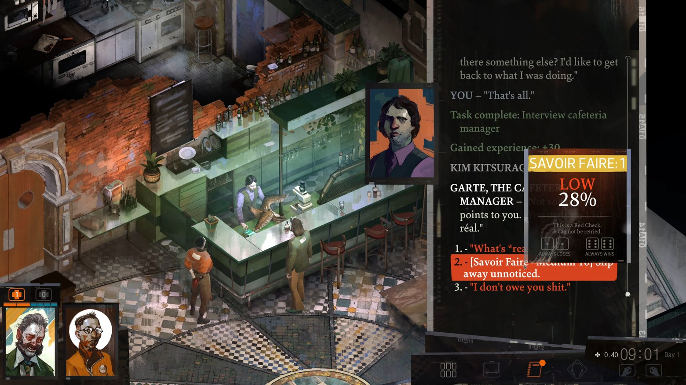
L'architettura Flux è stata presentata da Facebook nel 2014, ed è nata dalla necessità di affrontare i grovigli di two-way binding e la desincronizzazione dello stato nelle loro single-page application in rapida crescita.
Cioè, Facebook si è imbattuto esattamente nella matassa di "chi è sottoscritto a chi e perché questo widget si è improvvisamente ridisegnato", e la risposta è stata la regola ferrea per cui i dati scorrono rigorosamente in una sola direzione. Il flusso in Flux è unidirezionale, il che lo rende prevedibile e facile da debuggare, e, cosa importante, Flux non è una libreria ma un pattern architetturale, il ciclo "action, dispatcher, store, view".
Un anno dopo l'idea è stata portata a un'implementazione vera e propria, e tutto è stato compresso in un modello estremamente semplice con un unico store per l'intera applicazione, e qualsiasi cambiamento solo tramite action che generano lo stato successivo, mentre lo stato precedente rimane intatto, e quello nuovo ne viene derivato. Quel "lo stato nuovo viene derivato da quello vecchio, non mutato" è proprio l'immagine qui sopra senza frecce all'indietro.
UDF cura direttamente il problema di debug della sezione precedente. Con un'unica fonte di verità, il debug diventa più facile, e puoi loggare i cambiamenti di stato, tracciare le action e persino fare time-travel debugging, riproducendo le action e ispezionando lo stato in qualsiasi momento nel tempo. Se la reattività spalmava il rapporto causa-effetto sul grafo delle sottoscrizioni, UDF invece logga la sequenza delle action dispatchate e gli snapshot dello stato, e lo sviluppatore può riprodurre questo log di action per ricostruire ed esaminare qualsiasi stato passato, saltando nella storia avanti e indietro.
Alla domanda "perché questo widget si è ridisegnato" ora c'è una risposta in un unico posto: ecco l'elenco ordinato delle action, ecco lo stato prima e dopo ogni cambiamento.
Come tutto in questa serie, UDF è arrivato nei giochi dal web e vive per lo più a livello di librerie e filosofia. In Unity e in altri engine ci sono librerie di stato in stile Redux, e di solito vengono applicate negli stessi punti di MVVM con la sua reattività, cioè nei progetti pieni di menu e mobile, shop, inventario, meta-stato, ovvero nella parte del gioco che è essenzialmente già un'applicazione gestionale.
Qui non c'è nulla di gratis, ovviamente. Lo stato immutabile significa che ogni cambiamento genera una nuova versione, e tutto questo si trasforma in un flusso di allocazioni di memoria, il che è inammissibile sull'hot path. In più la cerimonia nuziale, quando ogni minimo cambiamento richiede una action e un reducer, e per un enorme mondo di gioco in continuo cambiamento è inutile far passare ogni posizione di ogni entità attraverso un unico store.
Agli sviluppatori indie non è piaciuto nulla di quanto sopra e hanno trascinato dentro il modello Data Binding con il two-way binding dei widget ai dati. Adesso hai spostato lo slider e il valore è cambiato, il valore è cambiato nel codice e lo slider si è mosso. Per moduli, impostazioni ed editor questo è divinamente comodo, fino a quando non hai un campo A che influenza un campo B che influenza il campo A, e il sistema comincia a eseguire aggiornamenti in cerchio, perché i two-way binding si mettono in loop molto facilmente, e ottieni questo problema gratis insieme alla comodità.
Il two-way binding non è un giovane arrampicatore indie, ma piuttosto un illustre veterano aziendale dal quale tutti gli altri sono fuggiti terrorizzati. È un nativo del mondo di XAML e WPF di Microsoft — già nel 2006 sapeva fare mode=TwoWay — e il two-way binding è stato reso massicciamente famoso (e al tempo stesso famigerato) da AngularJS di Google nei primi anni 2010.
Quindi sarebbe più corretto dire che gli indie e gli autori di strumenti non hanno inventato questo approccio, ma hanno volentieri raccolto ciò che l'enterprise aveva gettato via tra le urla, proprio perché per moduli, impostazioni ed editor la comodità supera tutti i suoi svantaggi.
Il fascino principale è che ti libera dal dover scrivere manualmente gli event listener e mantenere il DOM e lo stato sincronizzati. Per una schermata di impostazioni è semplicemente il paradiso, quando hai spostato lo slider, il valore è cambiato nel codice, hai cambiato il valore nel codice, lo slider si è mosso, e non c'è bisogno di scrivere nessun glue code. Sotto il cofano, in Angular questo funzionava attraverso i watchers che il framework imposta per ogni variabile associata a $scope, e un digest cycle che percorre lo scope e i suoi figli, aggiornando i cambiamenti.
Nei giochi il two-way binding vive in moduli, impostazioni ed editor, e quasi mai sullo HUD di combattimento. L'esempio più comune sono gli editor degli engine stessi, come l'inspector di Unity, i pannelli Details in Unreal, gli inspector di Godot — tutti questi pannelli delle proprietà sono in two-way binding con i campi degli oggetti, cambi un numero nell'inspector, cambia nell'oggetto, uno script cambia un campo e l'inspector si aggiorna.
Lo stesso nelle schermate delle opzioni e negli editor di livelli e mod integrati nei giochi. Del middleware, il two-way binding è portato da NoesisGUI con il suo XAML, dove il View ottiene i dati dal DataContext tramite data binding, e la modalità TwoWay è disponibile lì esattamente come nel WPF nativo.
La "versione indie" del two-way binding non è nemmeno un framework, ma il buon vecchio trucco del passaggio per puntatore. Quando scrivi qualcosa come SliderFloat("speed", &value), il widget sia legge sia scrive questa variabile proprio sul posto a ogni frame, e questo è, in sostanza, two-way binding, solo senza watchers, senza digest cycle e senza un grafo di sottoscrizioni nascosto.
Curiosamente, proprio a causa dell'assenza di questo grafo nascosto, la variante indie incappa nel loop molto più raramente, perché tutto accade in un ordine deterministico all'interno di un unico frame, e puoi districare chi ha sovrascritto chi semplicemente a occhio sul codice, anziché scavare tra i watchers.
Il two-way binding è l'apoteosi della comodità, che spazza via tutto il boilerplate della sincronizzazione tra il model e il view, prendendo per questo una tariffa molto piccola. Questa è un'altra risposta allo stesso eterno problema che attraversa tutte le storie: ogni approccio alla UI è un proprio trade-off tra comodità, tracciabilità e prestazioni, esattamente come ogni tipo di memoria in una console è un trade-off tra velocità, prezzo e capacità, e si sceglie non "in generale" ma per un profilo di dati specifico.
Signal Graph non l'ha invitato nessuno, è venuto da solo. Questa è, in sostanza, una versione più raffinata della reattività, in cui l'interfaccia è descritta come un grafo orientato di segnali, dove ogni nodo è un calcolo che dipende dai suoi input, e quando una fonte cambia, il grafo ricalcola automaticamente solo quei nodi che dipendono effettivamente dall'input modificato. Questo è di moda sul web, e nei giochi abita di nuovo negli engine interni o in implementazioni fatte in casa.
Asse cinque: posizionamento degli elementi
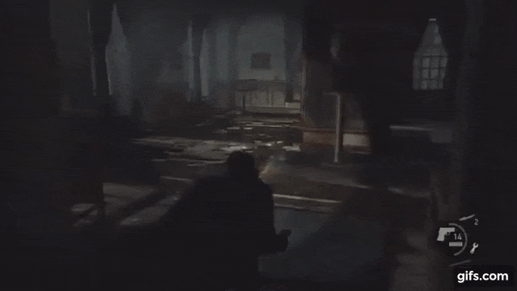
Supponiamo di aver deciso dove si trovano i widget e come i dati li raggiungono. Adesso dobbiamo capire in quali pixel disegnarli, e questo è un argomento vasto a sé, non solo per i giochi, chiamato layout.
L'approccio Constraint-based ti permette di descrivere non le posizioni ma dei constraint come "questo pulsante è ancorato al bordo destro", "questi due campi hanno la stessa larghezza", "lo spazio tra di loro non è inferiore a otto pixel", dopodiché un "solver" trova coordinate concrete che soddisfano tutti i constraint contemporaneamente. È così che funziona Auto Layout in iOS, ed è molto potente ed espressivo, ma per la flessibilità paghi con il fatto che il tempo per risolvere il sistema di constraint è poco prevedibile, e il tempo imprevedibile è l'ultima cosa che vuoi vedere nel frame budget di un gioco.
Il layout constraint-based è un'invenzione molto vecchia, dagli albori stessi della computer grafica, e il suo progenitore è Sketchpad di Ivan Sutherland del 1963, il primo programma di grafica interattiva, in cui si potevano impostare constraint geometrici e il sistema li risolveva.
Poi l'idea è stata sviluppata per decenni e si è cristallizzata nell'algoritmo Cassowary. Cassowary è un toolkit incrementale di risoluzione di constraint che risolve efficientemente sistemi di uguaglianze e disuguaglianze lineari, dove i constraint possono essere requisiti o preferenze, e il solver aggiorna le variabili in modo da soddisfare i constraint dati.
È stato sviluppato da Greg Badros, Alan Borning e Peter Stuckey, specificamente ottimizzato per i compiti di interfaccia. Poi Cassowary ha conquistato quasi tutto il mondo della UI delle app ed è alla fine diventato il motore di layout in Mac OS Lion, e da lì è passato in iOS, quel famoso Auto Layout che avete tutti visto sui dispositivi Apple.
Auto Layout si è guadagnato la reputazione di essere lento su grandi quantità di constraint non per niente, e il tempo imprevedibile è una via diretta verso freeze e stalli. È significativo che persino Apple stessa, dopo aver costruito Auto Layout, lo abbia sostituito nel più recente SwiftUI con un modello più semplice e prevedibile in cui il genitore propone una dimensione e il figlio sceglie la propria, proprio per il bene della prevedibilità e della velocità.
I giochi quasi sempre aggirano il solver generale proprio a causa dell'imprevedibilità, preferendo layout dal costo limitato e fisso: anchors e pivots in Unity uGUI e in Unreal UMG, oppure flexbox. Dove il constraint-based vive davvero nel gamedev è negli editor e negli strumenti, dove essenzialmente non c'è un frame budget e ci si può permettere un solver, oppure nei giochi mobile le cui schermate di menu a volte usano semplicemente l'Auto Layout nativo o ConstraintLayout.
Flexbox / Flow è più semplice e più prevedibile, adesso gli elementi si allineano lungo un asse con regole di allineamento e wrapping, come le celle di una tabella. La libreria Yoga di Meta implementa esattamente il flexbox, vive in React Native, e da lì è entrata in alcune UI di giochi, permettendo un buon equilibrio tra espressività e prevedibilità con un costo chiaro in millisecondi.
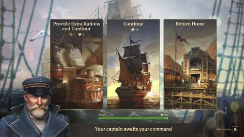
Anchors + Offsets rimane ancora il cavallo di battaglia della UI di gioco, quando la posizione di un elemento è impostata come un'ancora a un bordo, al centro o a un angolo del genitore più un offset in pixel. Unity UGUI e Unreal UMG sono costruiti attorno a questo, e la ragione della sua popolarità è proprio la prevedibilità, perché le anchors si calcolano in modo banale, il comportamento al cambio della risoluzione dello schermo non cambia, e l'artista capisce perfettamente cosa succederà all'elemento a diverse risoluzioni, senza eseguire complessi controlli mentali.
Per apprezzare perché le anchors siano diventate il cavallo di battaglia, bisogna ricordare che un tempo non esistevano per mancanza di necessità. Nell'era delle console c'era esattamente una sola risoluzione: l'Atari, il NES, la macchina arcade disegnavano in un unico schermo, e le coordinate degli elementi erano semplicemente inchiodate in pixel, perché nessun altro pixel era previsto.
Il problema del posizionamento è nato insieme alla diversità degli schermi, quando prima è comparso uno zoo di risoluzioni sul PC, e poi il boom del mobile con i suoi infiniti aspect ratio ha reso obbligatoria l'indipendenza dalla risoluzione. È allora che è servito un modo per descrivere una posizione in modo che sopravvivesse a un cambio di schermo, e quel modo sono diventate le anchors con gli offset.
La posizione ora non è coordinate assolute, ma un'ancora a un bordo, angolo o centro del genitore più un offset in pixel. Questa è una coordinata relativa che si calcola in modo banale e sopravvive a un cambio di risoluzione senza alcun solver, e in sostanza è il constraint-based della sezione precedente, ridotto al sottoinsieme minimo di constraint che si risolve in O(1) per elemento, e invece di "trova le coordinate che soddisfano il sistema" qui è "prendi questo bordo del genitore e spostati di otto pixel", e basta, nessun grafo di equazioni.
Se i modelli precedenti vivevano negli engine interni e negli strumenti, le anchors con gli offset sono il layout UI predefinito in tutti gli engine su cui è realizzata una quota gigantesca di tutti i giochi. Quindi dagli indie ai grandi titoli, qualsiasi engine offre questo per impostazione predefinita, e per NON usare le anchors devi fare uno sforzo speciale.
Anche questa semplicità ha il suo prezzo, e le anchors sono meno espressive dei solver o di altri sistemi, e non appena il layout diventa davvero complesso e adattivo, comincia l'armeggiare con i layout group annidati e la messa a punto fine. Così gli engine hanno aggiunto sopra un approccio flexbox, e stanno promuovendo pattern web con stili come sostituzione. Cioè, le anchors non cercano di essere tutto, coprono i casi dei moduli semplici e passano i casi complessi al flexbox.
Anchors + offsets hanno vinto le guerre del layout grazie a questa semplicità, offrendo un'espressività a livello dei solver in cambio di un costo limitato, un comportamento stabile e un modello leggibile da un artista, e per la UI di combattimento questo trade-off ha quasi sempre l'aspetto di una vittoria delle anchors, quando il cavallo di battaglia diventa non lo strumento più intelligente, ma quello di cui si possono prevedere costo e comportamento.
Manual / Absolute rimane anch'esso un cavallo di battaglia, ma si è già trasferito nella scuderia accanto. Questo è quando piazzi semplicemente tutto a mano in pixel o in coordinate normalizzate, senza alcun motore di layout. È così che vivono Dear ImGui e la stragrande maggioranza dei sistemi HUD custom, ed è una scelta normale, perché per uno HUD di combattimento di cinque elementi, costruire un constraint solver è come sparare ai passeri con il cannone.
Retained Immediate Mode (RIMD) è un ibrido che cerca di prendere il meglio di entrambi i mondi, in modo che il codice sia scritto nel piacevole stile immediate, mentre sotto il cofano il sistema confronta ciò che hai descritto con il frame precedente e tocca solo ciò che è cambiato. Concettualmente questo è ciò che fa React con il suo virtual DOM e ciò che fa Flutter, e in questa direzione, a mio parere, la moderna UI di gioco sta attualmente derivando, perché lo sviluppatore ottiene la semplicità del codice immediate-mode, e l'engine ottiene il risparmio del ridisegno retained, ed entrambe le parti sono più o meno soddisfatte.
Asse sei: rendering

Successivamente, la UI disegnata a livello programmatico deve essere trasformata in pixel, e nel corso dello sviluppo dei giochi sono emerse diverse scuole di pensiero, ciascuna con i suoi sostenitori e i suoi detrattori.
Il rendering Canvas-based riversa tutti i widget in un unico spazio, dove l'ordine di aggiunta determina cosa si sovrappone a cosa, e gli elementi vicini per stato vengono raggruppati in un unico passaggio. Semplice, chiaro, si presta benissimo al batching, e per la maggior parte delle interfacce 2D questo è più che sufficiente.
La domanda sul perché tutto questo serva viene dall'articolo sulla memoria delle console. Non è il pixel in sé a essere costoso, è la draw call, e ogni draw call è un cambio di stato della GPU e un overhead sul lato CPU. Una UI ingenua che disegna ogni icona e ogni lettera con una call separata uccide il processore mobile molto prima di scontrarsi con il fill rate. L'approccio Canvas è lo sprite batching applicato all'interfaccia, ossia bisogna assemblare geometria omogenea in un'unica mesh e consegnarla tutta in una volta. Quindi non è per caso che "si presti benissimo al batching", è stato inventato esattamente per questo.
Il canvas è responsabile di combinare la propria geometria in batch, generare i comandi di disegno e inviarli al sistema grafico, il tutto in codice C++ nativo, e questo si chiama rebatch o batch build. Calcolare i batch non è gratis, perché le mesh vengono di solito prese da componenti come il Canvas Renderer, e per calcolare i batch bisogna ordinare le mesh per profondità e controllarne le sovrapposizioni, i materiali condivisi e così via. Cioè, "l'ordine di aggiunta determina cosa si sovrappone a cosa", e il motore ordina letteralmente per profondità e cerca le sovrapposizioni per capire cosa si può incollare insieme e cosa no.
Ed è qui che riaffiora lo stesso identico costo in cui siamo inciampati nella sezione sullo scene graph, perché il batch è messo in cache e vive finché qualcosa non cambia, ma poiché il motore disegna la UI in uno o pochi passaggi, un elemento del canvas che cambia posizione, scala o rotazione costringe il canvas a ricostruirsi, e anche un cambiamento di contenuto, per esempio del testo, innesca questa ricostruzione.
E non viene ricostruito un solo elemento, ma tutto, perché il canvas percorre l'intera gerarchia per rigenerare da capo la lista degli elementi, ricalcolando i vertici, gli indici, i colori e le UV di tutti gli elementi. Da qui il classico crollo di prestazioni anche su innocenti effetti di hover sui pulsanti, che innescano un Canvas Rebuild. Cioè, la virtù del canvas (aver incollato tutto in un unico passaggio) e la sua maledizione (cambiato un pixel, ricostruito l'intero passaggio) sono due facce della stessa medaglia.
Il rimedio è la tecnica della suddivisione in sub-canvas. Si tratta di canvas annidati che isolano i propri figli dal genitore: un figlio "sporco" non costringe il genitore a ricostruirsi e viceversa. Così il consiglio canonico "sposta gli elementi dinamici su un canvas separato da quelli statici" è una diretta conseguenza di come funziona il batching: lascia che lo sfondo statico giaccia in un unico batch eterno, e che il timer che scandisce ogni frame stuzzichi soltanto il proprio piccolo sub-canvas. Anche la disciplina con gli atlas rientra qui, perché elementi provenienti da texture diverse non si incolleranno in un unico draw pass per quanto il motore lo desideri.
Il rendering Canvas-based è il modo in cui un'enorme fetta di giochi su Unity disegna la UI, e concettualmente la stessa cosa sta sotto lo Slate render di Unreal e sotto i nodi Control di Godot. Nel gamedev 2D e mobile è l'impostazione predefinita, perché per la maggior parte delle interfacce piatte è più che sufficiente, con un numero limitato di elementi e cambiamenti rari, e tutto si incolla splendidamente.
L'approccio Layer-based suddivide l'interfaccia in layer (mondo, HUD, menu, tooltip), e ogni layer viene renderizzato separatamente con la propria profondità e i propri parametri di blending. Questo serve affinché parti diverse della UI abbiano regole di composizione diverse, per esempio il tooltip sta sempre sopra a tutto, l'effetto di danno si fonde con il mondo, e il menu deve oscurare il mondo sottostante, e trascinare tutto questo su un unico canvas piatto diventa rapidamente complesso e costoso.
Il rendering Layer-based è nato nella produzione cinematografica molto prima delle UI dei giochi. Il fotogramma finale nel cinema e negli effetti speciali veniva tradizionalmente assemblato non in un unico passaggio ma da diversi, e una scena può essere renderizzata come più layer o passaggi, che vengono poi composti in un fotogramma finito. Questa tradizione risale fino alle riprese in motion-control dell'era pre-digitale, quando la telecamera veniva fatta passare davanti al modellino di un'astronave prima per il "beauty pass" illuminato, e poi con lo stesso movimento venivano ripresi separatamente gli oblò luminosi e i propulsori.
Le UI dei giochi hanno semplicemente ereditato questo principio, in cui parti diverse dell'immagine vivono su layer diversi con le proprie regole, e vengono poi unite insieme. L'unica differenza è che nel cinema è offline, mentre in un gioco il compositing avviene a ogni frame in tempo reale.
La radice della necessità è proprio che parti diverse della UI hanno regole di composizione diverse, e stiracchiarle su un unico canvas piatto significa combatterci contro. L'effetto di danno deve fondersi con il mondo con il proprio blending, il tooltip deve stare sopra a tutto e non infilarsi mai sotto altri elementi, il menu deve oscurare il mondo sottostante con uno sfondo semitrasparente.
Queste sono tre diverse modalità di blend e tre diverse regole di profondità, e cercare di esprimerle con l'ordine in un unico mucchio piatto si trasforma rapidamente in una lotta con lo z-order. I layer sciolgono questo nodo, dando a ciascuna classe di UI il proprio spazio con i propri parametri.
Il caso di applicazione più emblematico è la VR, dove il layer-based non è una questione di comodità di compositing ma un requisito diretto dell'hardware per il bene della leggibilità e del comfort del giocatore. Sui visori esistono i cosiddetti compositor layers, dove si può consegnare un widget della UI come layer separato, disattivandone il render nel passaggio principale, e poi viene disegnato direttamente dal compositor del visore.
Questo si fa perché il testo fatto passare attraverso il render ordinario con la sua riproiezione e compressione diventa sfocato e tremolante in VR, portando rapidamente a un'increspatura negli occhi e a mal di testa, mentre un compositor layer separato resta nitido. Sul Meta Quest si possono appendere fino a 16 compositor layers, e tutto ciò che va oltre semplicemente non verrà disegnato.
Il rendering SVG memorizza tutti gli elementi, le icone e gli effetti non come immagini raster già pronte di dimensione fissa, ma come rappresentazione vettoriale, il che permette di scalare QUALSIASI cosa senza artefatti e di disegnare bellissimi contorni, ombre e bagliori quasi gratis direttamente nello shader. Oggi questo viene usato in diversi framework, perché gli artisti preferiscono ancora le texture per la loro prevedibilità e affidabilità.
La vera UI vettoriale nei giochi ha raggiunto il suo apice nell'era di Flash, e il vettore di questo era Scaleform, al cui interno c'era un renderer accelerato via GPU con un motore per tassellare i vettori in triangoli e per l'antialiasing, più un sistema di font vettoriali e il supporto per tutti i filtri di Flash come Glow, Bevel e DropShadow. Eccolo, tutto ciò che c'è nel vostro paragrafo: vettore, scalabilità, contorni e bagliori quasi gratis. E metà degli studi AAA disegnava i menu in questo modo negli anni 2000 e nei primi anni 2010.
Ma alla fine il vettore ha perso, gli artisti preferiscono le texture per la loro prevedibilità. Con un vettore onesto, il costo del rendering dipende dalla complessità della forma, un glifo complesso o un'icona intricata sono molte curve, molta tassellazione, un carico imprevedibile sul frame, quel nemico stesso del frame budget. In più la VM di Flash sopra con le sue pause, e quando Scaleform è stato dismesso, il vettore puro come modo di disegnare le UI dei giochi ha lasciato il mainstream insieme a esso.
Ma il suo parente semplificato, al contrario, ha conquistato l'industria quasi interamente, e lo avete sicuramente usato senza chiamarlo vettore. La tecnica è stata introdotta da Chris Green di Valve: il signed distance field rendering è stato applicato in Team Fortress 2 e descritto per la conferenza SIGGRAPH 2007, "Improved Alpha-Tested Magnification for Vector Textures and Special Effects". Permette di disegnare font raster (ma questo è un caso particolare per i glifi) senza bordi seghettati anche con forti ingrandimenti. Un normale font bitmap ha un bell'aspetto solo con un'aderenza pixel-perfect, mentre in rotazione e ridimensionamento o si sgretola in pixel o si spalma in una sfocatura, e l'SDF risolve questo memorizzando nella texture non il colore ma la distanza dal contorno, dalla quale lo shader ripristina un confine nitido a qualsiasi dimensione.
Poi la tecnica è stata perfezionata, perché il suo principale difetto erano gli angoli arrotondati, e Viktor Chlumský nella sua tesi di master ha ideato il multi-channel distance field, che ripristina gli angoli nitidi quasi perfettamente, usando tutti e tre i canali di colore, e il suo msdfgen è diventato l'implementazione di riferimento. Oggi è lo standard, e l'SDF alimenta TextMeshPro in Unity, mentre Unreal ha un SDF text render integrato per Slate con una scelta del tipo di field (multi-channel, single-channel, approximate) e della qualità direttamente nei device profile. Cioè, il testo nitido e scalabile in quasi ogni gioco moderno è un vettore in bake, solo sotto il nome di distance field, non SVG.
Il rendering SVG è il sogno della scalabilità e degli effetti a basso costo dallo shader, che nei giochi si è realizzato attraverso un compromesso. Il vettore puro offriva espressività al prezzo di un costo di rendering imprevedibile, ma il distance field e le texture hanno vinto, avendo rinunciato a parte della flessibilità in cambio di un costo fisso e preventivabile. E questa è di nuovo la stessa lezione con cui è cominciato l'articolo sulla memoria, la prevedibilità del costo è più importante della bellezza di picco, perché nel frame budget, come nella memoria della console, entra non ciò che è più appariscente, ma ciò che può essere calcolato in anticipo.
La GPU-driven UI sposta la formazione dell'immagine verso la scheda grafica, lasciando al processore solo l'aggiornamento degli input e dei singoli stati. Questo ha senso quando gli elementi sono davvero moltissimi (per esempio un editor di livelli o un gioco di strategia con migliaia di icone), e il collo di bottiglia diventa non il disegno dei pixel ma l'overhead dell'emissione dei comandi di disegno stessi, che stiamo cercando di rimuovere dalla CPU.
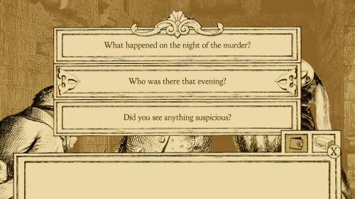
La UI come shader / fullscreen pass è l'estremo più radicale dello spettro, ora l'intera UI viene disegnata da uno o più shader che leggono i dati da una texture e decidono da soli dove e cosa disegnare. Anche parti di interfacce diegetiche e gli effetti di danno a schermo possono essere ricondotti qui, ed è inoltre un trucco preferito della demoscene, dove un tradizionale motore di UI pesa più dell'intera demo, e così l'interfaccia viene disegnata quasi interamente con la matematica anziché con i widget.
Il raro, lo strano e lo sperimentale
Oltre questo comincia un territorio in cui il gamedev mainstream entra di rado, ma è proprio qui che dimorano le idee più interessanti, la maggior parte delle quali proviene da paper scientifici o dallo smanettamento indie.
La Procedural UI viene generata da metadati o da uno schema. L'esempio più chiaro non sono più i giochi, ma gli strumenti dei motori, come il property editor in Unreal o l'inspector in Unity, che costruiscono da soli l'interfaccia a partire da una descrizione dei campi dell'oggetto, perché disporre manualmente un editor per ogni componente è una fatica di Sisifo che diventa istantaneamente obsoleta quando viene aggiunto un nuovo campo. Nei giochi veri e propri questo affiora talvolta nei roguelike e nei contenuti generati proceduralmente.
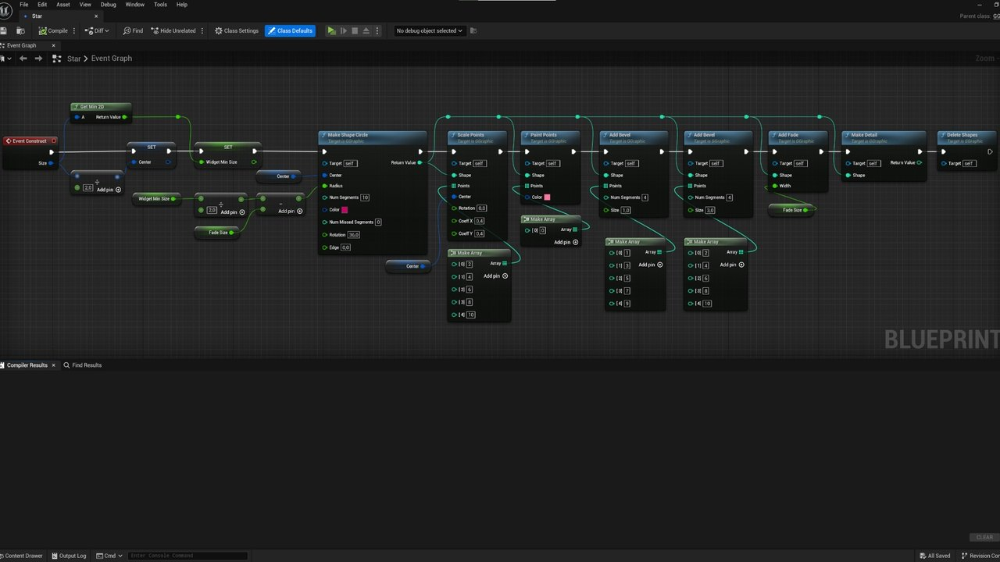
La Relationship UI abbandona la gerarchia in favore di un grafo di dipendenze, quando l'elemento A è "legato" a B, "esclude" C, "si raggruppa" con D. Un albero non può esprimere questo, mentre un grafo sì, e perciò questo approccio è interessante per sistemi di dialogo complessi e interfacce di quest, dove i legami tra gli elementi sono fondamentalmente non ad albero (una battuta apre tre rami e ne chiude altri due, e non puoi disegnarlo come un albero). Un esempio si può trovare nel gioco inZoi, uscito di recente, che raggruppa gli elementi dell'interfaccia per "parentela" con quelli vicini.
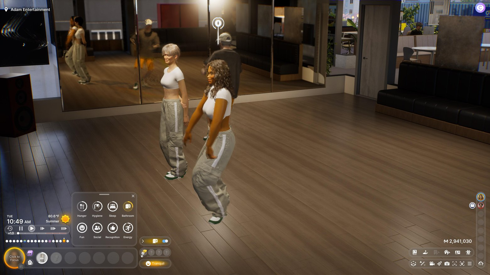
La Simulation UI porta al limite l'idea di interfaccia diegetica, così che ora l'interfaccia non trasmette lo stato ma è essa stessa una simulazione, i suoi elementi hanno proprietà fisiche e possono, per esempio, essere danneggiati. Il canonico Dead Space rientra di nuovo qui, perché il suo HUD è parte della tuta nel mondo tridimensionale, che reagisce fisicamente a ciò che accade, oppure la visiera del casco incrinata e il vetro imbrattato. Qui la classificazione "per collocazione nel mondo" e quella "per architettura" si incontrano finalmente in un unico oggetto.
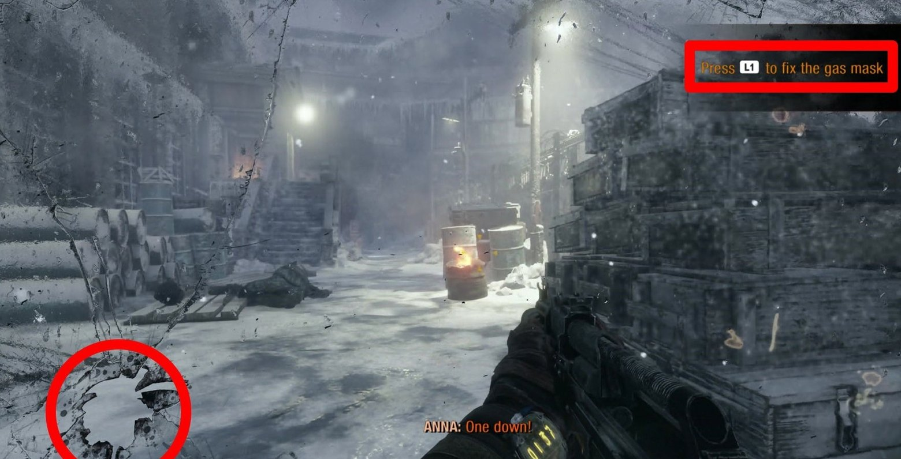
La Declarative UI descrive l'interfaccia in modo dichiarativo, e parte del lavoro viene svolto in anticipo, in fase di compilazione o di caricamento, per esempio le posizioni degli elementi statici vengono messe in bake come costanti in modo da non calcolarle affatto a runtime. Questo si fa nei giochi per console, dove ha senso pagare con il tempo di build per non spendere un solo ciclo nel frame a calcolare ciò che comunque è noto in anticipo.
La Tangible UI implementa la fisica degli oggetti tangibili, come carte, pile, scaffali ecc., che possono essere "lanciati" e funzioneranno secondo le leggi della fisica. Slay the Spire riguarda in parte questo, e il trucco qui è che la fisicità in una UI del genere non è più una decorazione ma un modo per rendere l'interfaccia intuitiva, perché il nostro cervello conosce dalla nascita la fisica dei pezzi di carta, ma non quella dei widget astratti sopra un mondo 3D.
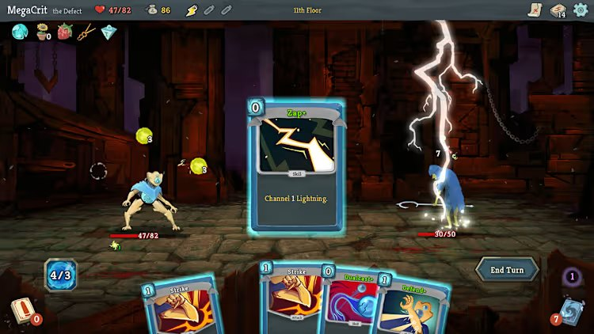
E infine la Self-modifying UI, che cancella il confine tra dati e codice e permette di cambiare il codice della UI a runtime a seconda del comportamento del giocatore. In un gioco normale questo suona come un incubo di manutenzione, ma nei giochi ARG, dove, per esempio, "hackerare" l'interfaccia è di per sé il gameplay, questa sarebbe una caratteristica naturale, e un'interfaccia che il giocatore può riscrivere smette di essere solo stato e diventa parte del mondo.
La ricerca e il territorio del "what if"
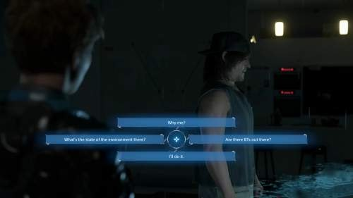
E infine, il bordo più lontano della mappa, dove dimorano vari paper di ricerca e startup morte, e molto raramente giochi effettivamente pubblicati, ma non per questo meno curiosi.
La Datalog UI descrive lo stato dell'interfaccia come un insieme di fatti in un database, e la visibilità e le proprietà degli elementi come query a questo database. Il fatto player_health(42) è cambiato, e tutte le query che ne dipendono si ricalcolano automaticamente, perché il motore conosce le dipendenze delle query dai fatti. L'idea è ispirata a Datalog e Datomic e non è stata implementata in nessun gioco che io conosca, ma come concetto "la UI è una query a una base di fatti" continua a stuzzicare le menti.
La Probabilistic UI cerca di indovinare le tue intenzioni e, sulla base delle previsioni, ricostruisce l'interfaccia in anticipo, spingendo avanti i pulsanti necessari e ingrandendo le zone cliccabili dove è più probabile che tu arrivi. Questo è stato oggetto di ricerca nel contesto delle interfacce predittive per gli smart glasses, ma non è mai arrivato in produzione. In parte è riconducibile qui l'interfaccia di Crusader Kings, che si adatta alla tua ricerca e spinge in cima i personaggi o gli oggetti visualizzati di recente, comincia a mostrare suggerimenti o eventi che hai contrassegnato come importanti o visualizzato o cercato di recente.
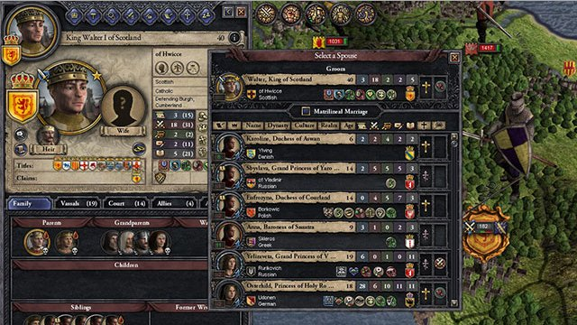
La Semantic UI descrive gli elementi attraverso il comportamento anziché l'aspetto, permettendo di definire un comportamento "questo è un pulsante di conferma per un'azione pericolosa", e il sistema sceglie da solo come disegnarlo (rosso, con un'icona, con una conferma). Questo è molto vicino a ciò che i sistemi LLM-driven UI stanno cercando di fare adesso, e qui ci ritroviamo improvvisamente all'avanguardia, perché i modelli linguistici sono proprio piuttosto bravi a mappare il significato in una rappresentazione.
La Cellular Automata UI sottopone gli elementi dell'interfaccia a regole locali di interazione con il giocatore e con i vicini, dalle quali cresce una struttura globale, e questo è ormai un puro espediente artistico della demoscene e degli art game, dove l'interfaccia conta non come comodità ma come spettacolo a sé stante.
Cosa fare di tutto questo
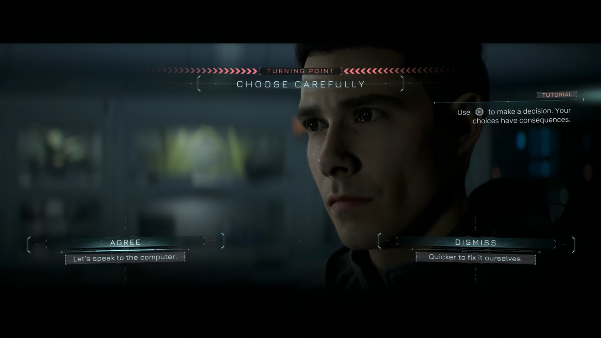
Se si prova a ripiegare tutti questi assi in un'unica immagine, ne esce una cosa spiacevole: non esiste un'unica architettura di UI corretta, e chiunque affermi il contrario semplicemente non è andato oltre un paio di assi del suo motore preferito. Diegetico o non diegetico lo decide il designer in base all'immersione. Scene graph o lista piatta lo decide il programmatore in base al profiler. Reactive o unidirezionale lo decide il team lead in base alla dimensione del team. Constraint-based o anchor lo decide la piattaforma in base al frame budget, e così via. E tutte queste decisioni, in generale, sono indipendenti, e questa è la risposta alla domanda posta all'inizio del primo articolo.
Curiosamente, l'arco storico della UI è esattamente lo stesso di quello della memoria delle console. All'inizio tutto veniva calcolato a mano (layout manuale, coordinate fisse, immediate mode), perché l'hardware era debole e le astrazioni erano un lusso inaccessibile. Poi sono arrivati i ricchi framework retained con alberi e auto-layout, perché l'hardware si è ingrassato e ci si poteva permettere di pagare per la comodità. E ora il pendolo sta tornando indietro verso ibridi come RIMD e GPU-driven UI, che di nuovo calcolano esattamente quanto serve e non un ciclo di più, solo che ora non per povertà ma per maturità.
Ma il compito fondamentale in tutti questi decenni non è cambiato di una virgola, ed è lo stesso di qualsiasi altro sottosistema in un gioco. I dati necessari devono finire sullo schermo nel posto giusto, al momento giusto e nella forma giusta, altrimenti il giocatore vedrà una barra della salute che sfarfalla e deciderà che hai le mani goffe, e avrà, in parte, ragione.
← Tutti gli articoli